20 Better transport
Modern vehicle technology can reduce climate change emissions without changing the look, feel or performance that owners have come to expect.
California Air Resources Board
Roughly one third of our energy goes into transportation. Can technology deliver a reduction in consumption? In this chapter we explore options for achieving two goals: to deliver the biggest possible reduction in transport’s energy use, and to eliminate fossil fuel use in transport.
Transport featured in three of our consumption chapters: Chapter 3 (cars), Chapter 5 (planes), and Chapter 15 (road freight and sea freight). So there are two sorts of transport to address: passenger transport, and freight. Our unit of passenger transport is the passenger-kilometre (p-km). If a car carries one person a distance of 100 km, it delivers 100 p-km of transportation. If it carries four people the same distance, it has delivered 400 p-km. Similarly our unit of freight transport is the ton-km (t-km). If a truck carries 5 t of cargo a distance of 100 km then it has delivered 500 t-km of freight-transport. We’ll measure the energy consumption of passenger transport in “kWh per 100 passenger-kilometres,” and the energy consumption of freight in “kWh per ton-km.” Notice that these measures are the other way up compared to “miles per gallon”: whereas we like vehicles to deliver many miles per gallon, we want energy-consumption to be few kWh per 100 p-km.
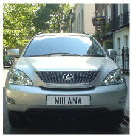
Figure 20.1. This chapter’s starting point: an urban luxury tractor. The average UK car has a fuel consumption of 33 miles per gallon, which corresponds to an energy consumption of 80 kWh per 100 km. Can we do better?
We’ll start this chapter by discussing how to reduce the energy consumption of surface transport. To understand how to reduce energy consumption, we need to understand where the energy is going in surface transport. Here are the three key concepts, which are explained in more detail in Technical Chapter A.
In short-distance travel with lots of starting and stopping, the energy mainly goes into speeding up the vehicle and its contents. Key strategies for consuming less in this sort of transportation are therefore to weigh less, and to go further between stops. Regenerative braking, which captures energy when slowing down, may help too. In addition, it helps to move slower, and to move less.
In long-distance travel at steady speed, by train or automobile, most of the energy goes into making air swirl around, because you only have to accelerate the vehicle once. The key strategies for consuming less in this sort of transportation are therefore to move slower, and to move less, and to use long, thin vehicles.
In all forms of travel, there’s an energy-conversion chain, which takes energy in some sort of fuel and uses some of it to push the vehicle forwards. Inevitably this energy chain has inefficiencies. In a standard fossil-fuel car, for example, only 25% is used for pushing, and roughly 75% of the energy is lost in making the engine and radiator hot. So a final strategy for consuming less energy is to make the energy-conversion chain more efficient.
These observations lead us to six principles of vehicle design and vehicle use for more-efficient surface transport: a) reduce the frontal area per person; b) reduce the vehicle’s weight per person; c) when travelling, go at a steady speed and avoid using brakes; d) travel more slowly; e) travel less; and f) make the energy chain more efficient. We’ll now discuss a variety of ways to apply these principles.
How to roll better
Figure 20.2. Team Crocodile’s eco-car uses 1.3 kWh per 100 km. Photo kindly provided by Team Crocodile. www.teamcrocodile.com
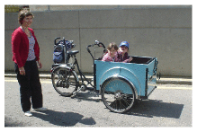
Figure 20.3. “Babies on board.” This mode of transportation has an energy cost of 1 kWh per 100 person-km.
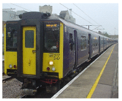
Figure 20.4. This 8-carriage train, at its maximum speed of 100mph (161 km/h), consumes 1.6 kWh per 100 passenger-km, if full. 1
A widely quoted statistic says something along the lines of “only 1 percent of the energy used by a car goes into moving the driver” 2 – the implication being that, surely, by being a bit smarter, we could make cars 100 times more efficient? The answer is yes, almost, but only by applying the principles of vehicle design and vehicle use, listed above, to extreme degrees.
One illustration of extreme vehicle design is an eco-car, which has small frontal area and low weight, and – if any records are to be broken – is carefully driven at a low and steady speed. The Team Crocodile eco-car (figure 20.2) does 2184 miles per gallon (1.3 kWh per 100 km) at a speed of 15 mph (24 km/h). Weighing 50 kg and shorter in height than a traffic cone, it comfortably accommodates one teenage driver.
Hmm. I think that the driver of the urban tractor in figure 20.1 might detect a change in “look, feel and performance” if we switched them to the eco-car and instructed them to keep their speed below 15 miles per hour. So, the idea that cars could easily be 100 times more energy efficient is a myth. We’ll come back to the challenge of making energy-efficient cars in a moment. But first, let’s see some other ways of satisfying the principles of more-efficient surface transport.
Figure 20.3 shows a multi-passenger vehicle that is at least 25 times more energy-efficient than a standard petrol car: a bicycle. The bicycle’s performance (in terms of energy per distance) is about the same as the ecocar’s. 3 Its speed is the same, its mass is lower than the eco-car’s (because the human replaces the fuel tank and engine), and its effective frontal area is higher, because the cyclist is not so well streamlined as the eco-car.
Figure 20.4 shows another possible replacement for the petrol car: a train, with an energy-cost, if full, of 1.6 kWh per 100 passenger-km. In contrast to the eco-car and the bicycle, trains manage to achieve outstanding efficiency without travelling slowly, and without having a low weight per person. Trains make up for their high speed and heavy frame by exploiting the principle of small frontal area per person. Whereas a cyclist and a regular car have effective frontal areas of about 0.8 m2 and 0.5 m2 respectively, a full commuter train from Cambridge to London has a frontal area per passenger of 0.02 m2.
But whoops, now we’ve broached an ugly topic – the prospect of sharing a vehicle with “all those horrible people.” Well, squish aboard, and let’s ask: How much could consumption be reduced by a switch from personal gas-guzzlers to excellent integrated public transport?
(Figure omitted from this edition: third-party rights.)
Figure 20.5. Some public transports, and their energy-efficiencies, when on best behaviour. Tubes, outer and inner. Two high-speed trains. The electric one uses 3 kWh per 100 seat-km; the diesel, 9 kWh. Trolleybuses in San Francisco. Vancouver SeaBus. Photo by Larry.
Public transport
At its best, shared public transport is far more energy-efficient than individual car-driving. A diesel-powered coach, carrying 49 passengers and doing 10 miles per gallon at 65 miles per hour, uses 6 kWh per 100 p-km – 13 times better than the single-person car. Vancouver’s trolleybuses consume 270 kWh per 100 vehicle-km, and have an average speed of 15 km/h. If the trolleybus has 40 passengers on board, then its passenger transport cost is 7 kWh per 100 p-km. The Vancouver SeaBus has a transport cost of 83 kWh per vehicle-km at a speed of 13.5 km/h. It can seat 400 people, so its passenger transport cost when full is 21 kWh per 100 p-km. London underground trains, at peak times, use 4.4 kWh per 100 p-km – 18 times better than individual cars. 4 Even high-speed trains, 5 which violate two of our energy-saving principles by going twice as fast as the car and weighing a lot, are much more energy efficient: if the electric high-speed train is full, its energy cost is 3 kWh per 100 p-km – that’s 27 times smaller than the car’s!
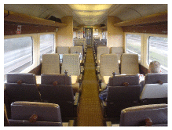
Figure 20.6. Some trains aren’t full. Three men and a cello – the sole occupants of this carriage of the 10.30 high-speed train from Edinburgh to Kings Cross.
However, we must be realistic in our planning. Some trains, coaches, and buses are not full (figure 20.6). So the average energy cost of public transport is bigger than the best-case figures just mentioned. What’s the average energy-consumption of public transport systems, and what’s a realistic appraisal of how good they could be?
In 2006–7, the total energy cost of all London’s underground trains, including lighting, lifts, depots, and workshops, was 15 kWh per 100 p-km 6 – five times better than our baseline car. In 2006–7 the energy cost of all London buses was 32 kWh per 100 p-km. Energy cost is not the only thing that matters, of course. Passengers care about speed: and the underground trains delivered higher speeds (an average of 33 km/h) than buses (18 km/h). Managers care about financial costs: the staff costs, per passenger-km, of underground trains are less than those of buses.
(Figure omitted from this edition: third-party rights.)
Figure 20.7. Some public transports, and their average energy consumptions. Left: Some red buses. Right: Croydon Tramlink. Photo by Stephen Parascandolo.
The total energy consumption of the Croydon Tramlink system (figure 20.7) in 2006–7 (including the tram depot and facilities at tram-stops) was 9 kWh per 100 p-km, with an average speed of 25 km/h. 7
| Mode | Energy consumption (kWh per 100 p-km) |
|---|---|
| Car | 68 |
| Bus | 19 |
| Rail | 6 |
| Air | 51 |
| Sea | 57 |
Table 20.8. Overall transport efficiencies of transport modes in Japan (1999).
How good could public transport be? Perhaps we can get a rough indication by looking at the data from Japan in table 20.8. At 19 kWh per 100 p-km and 6 kWh per 100 p-km, bus and rail both look promising. Rail has the nice advantage that it can solve both of our goals – reduction in energy consumption, and independence from fossil fuels. Buses and coaches have obvious advantages of simplicity and flexibility, but keeping this flexibility at the same time as getting buses and coaches to work without fossil fuels may be a challenge.
To summarise, public transport (especially electric trains, trams, and buses) seems a promising way to deliver passenger transportation – better in terms of energy per passenger-km, perhaps five or ten times better than cars. However, if people demand the flexibility of a private vehicle, what are our other options?
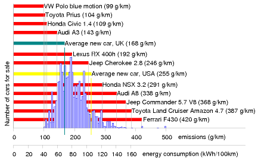
Figure 20.9. Carbon pollution, in grams CO2 per km, of a selection of cars for sale in the UK. The horizontal axis shows the emission rate, and the height of the blue histogram indicates the number of models on sale with those emissions in 2006. Source: www.newcarnet.co.uk. The second horizontal scale indicates approximate energy consumptions, assuming that 240 g CO2 is associated with 1 kWh of chemical energy.
Private vehicles: technology, legislation, and incentives
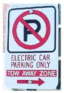
Figure 20.10. Special parking privileges for electric cars in Ann Arbor, Michigan.
Figure 20.11. Monster cars are just tall enough to completely obscure the view and the visibility of pedestrians.
The energy consumption of individual cars can be reduced. The wide range of energy efficiencies of cars for sale proves this. In a single showroom in 2006 you could buy a Honda Civic 1.4 that uses roughly 44 kWh per 100 km, or a Honda NSX 3.2 that uses 116 kWh per 100 km (figure 20.9). The fact that people merrily buy from this wide range is also proof that we need extra incentives and legislation to encourage the blithe consumer to choose more energy-efficient cars. There are various ways to help consumers prefer the Honda Civic over the Honda NSX 3.2 gas-guzzler: raising the price of fuel; cranking up the showroom tax (the tax on new cars) in proportion to the predicted lifetime consumption of the vehicle; cranking up the road-tax on gas guzzlers; parking privileges for economical cars (figure 20.10); or fuel rationing. All such measures are unpopular with at least some voters. Perhaps a better legislative tactic would be to enforce reasonable energy-efficiency, rather than continuing to allow unconstrained choice; for example, we could simply ban, from a certain date, the sale of any car whose energy consumption is more than 80 kWh per 100 km; and then, over time, reduce this ceiling to 60 kWh per 100 km, then 40 kWh per 100 km, and beyond. Alternatively, to give the consumer more choice, regulations could force car manufacturers to reduce the average energy consumption of all the cars they sell. Additional legislation limiting the weight and frontal area of vehicles would simultaneously reduce fuel consumption and improve safety for other road-users (figure 20.11). People today choose their cars to make fashion statements. With strong efficiency legislation, there could still be a wide choice of fashions; they’d all just happen to be energy-efficient. You could choose any colour, as long as it was green.
While we wait for the voters and politicians to agree to legislate for efficient cars, what other options are available?
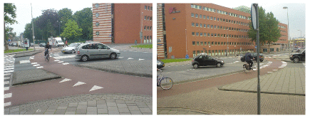
Figure 20.12. A roundabout in Enschede, Netherlands.
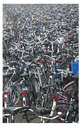
Figure 20.13. A few Dutch bikes.
Bikes
My favourite suggestion is the provision of excellent cycle facilities, along with appropriate legislation (lower speed-limits, and collision regulations that favour cyclists, for example). 8 Figure 20.12 shows a roundabout in Enschede, Netherlands. There are two circles: the one for cars lies inside the one for bikes, with a comfortable car’s length separating the two. The priority rules are the same as those of a British roundabout, except that cars exiting the central circle must give way to circulating cyclists (just as British cars give way to pedestrians on zebra crossings). Where excellent cycling facilities are provided, people will use them, as evidenced by the infinite number of cycles sitting outside the Enschede railway station (figure 20.13).
Somehow, British cycle provision (figure 20.14) doesn’t live up to the Dutch standard.
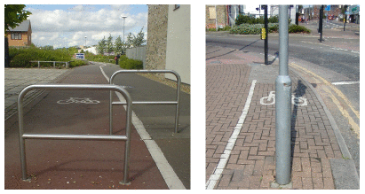
Figure 20.14. Meanwhile, back in Britain… Photo on right by Mike Armstrong.
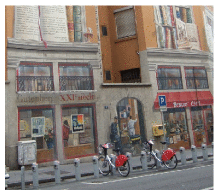
Figure 20.15. A V´elo’v station in Lyon.
In the French city of Lyon, a privately-run public bicycle network, V´elo’v, was introduced in 2005 and has proved popular. Lyon’s population of 470 000 inhabitants is served by 2000 bikes distributed around 175 cycle-stations in an area of 50 km2 (figure 20.15). In the city centre, you’re usually within 400 metres of a cycle-station. Users join the scheme by paying a subscription fee of €10 per year and may then hire bicycles free for all trips lasting less than 30 minutes. For longer hire periods, users pay up to €1 per hour. Short-term visitors to Lyon can buy one-week subscriptions for €1.
Other legislative opportunities
Speed limits are a simple knob that could be twiddled. As a rule, cars that travel slower use less energy (see Chapter A). With practice, drivers can learn to drive more economically: using the accelerator and brake less and always driving in the highest possible gear can give a 20% reduction in fuel consumption.
Figure 20.16. With congestion like this, it’s faster to walk.
Another way to reduce fuel consumption is to reduce congestion. Stopping and starting, speeding up and slowing down, is a much less efficient way to get around than driving smoothly. Idling in stationary traffic is an especially poor deliverer of miles per gallon!
Congestion occurs when there are too many vehicles on the roads. So one simple way to reduce congestion is to group travellers into fewer vehicles. A striking way to think about a switch from cars to coaches is to calculate the road area required by the two modes. Take a trunk road on the verge of congestion, where the desired speed is 60 mph. The safe distance from one car to the next at 60 mph is 77 m. If we assume there’s one car every 80 m and that each car contains 1.6 people, then vacuuming up 40 people into a single coach frees up two kilometres of road!
Congestion can be reduced by providing good alternatives (cycle lanes, public transport), and by charging road users extra if they contribute to congestion. In this chapter’s notes I describe a fair and simple method for handling congestion-charging. 9
Enhancing cars
Assuming that the developed world’s love-affair with the car is not about to be broken off, what are the technologies that can deliver significant energy savings? Savings of 10% or 20% are easy – we’ve already discussed some ways to achieve them, such as making cars smaller and lighter. Another option is to switch from petrol to diesel. Diesel engines are more expensive to make, but they tend to be more fuel-efficient. But are there technologies that can radically increase the efficiency of the energy-conversion chain? (Recall that in a standard petrol car, 75% of the energy is turned nto heat and blown out of the radiator!) And what about the goal of getting off fossil fuels?
In this section, we’ll discuss five technologies: regenerative braking; hybrid cars; electric cars; hydrogen-powered cars; and compressed-air cars.
Regenerative braking
There are four ways to capture energy as a vehicle slows down.
An electric generator coupled to the wheels can charge up an electric battery or supercapacitor.
Hydraulic motors driven by the wheels can make compressed air, stored in a small canister.
Energy can be stored in a flywheel.
Braking energy can be stored as gravitational energy by driving the vehicle up a ramp whenever you want to slow down. This gravitational energy storage option is rather inflexible, since there must be a ramp in the right place. It’s an option that’s most useful for trains, and it is illustrated by the London Underground’s Victoria line, which has hump-back stations. Each station is at the top of a hill in the track. Arriving trains are automatically slowed down by the hill, and departing trains are accelerated as they go down the far side of the hill. The hump-back-station design provides an energy saving of 5% and makes the trains run 9% faster.
Electric regenerative braking (using a battery to store the energy) salvages roughly 50% of the car’s energy in a braking event, leading to perhaps a 20% reduction in the energy cost of city driving.
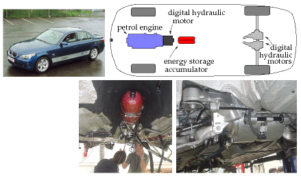
Figure 20.17. A BMW 530i modified by Artemis Intelligent Power to use digital hydraulics. Lower left: A 6-litre accumulator (the red canister), capable of storing about 0.05 kWh of energy in compressed nitrogen. Lower right: Two 200 kW hydraulic motors, one for each rear wheel, which both accelerate and decelerate the car. The car is still powered by its standard 190 kW petrol engine, but thanks to the digital hydraulic transmission and regenerative braking, it uses 30% less fuel.
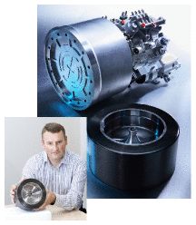
Figure 20.18. A flywheel regenerative-braking system. Photos courtesy of Flybrid Systems.
Regenerative systems using flywheels and hydraulics seem to work a little better than battery-based systems, salvaging at least 70% of the braking energy. 10 Figure 20.17 describes a hybrid car with a petrol engine powering digitally-controlled hydraulics. On a standard driving cycle, this car uses 30% less fuel than the original petrol car. In urban driving, its energy consumption is halved, from 131 kWh per 100 km to 62 kWh per 100 km (20 mpg to 43 mpg). (Credit for this performance improvement must be shared between regenerative braking and the use of hybrid technology.) Hydraulics and flywheels are both promising ways to handle regenerative braking because small systems can handle large powers. A flywheel system weighing just 24 kg (figure 20.18), designed for energy storage in a racing car, can store 400 kJ (0.1 kWh) of energy – enough energy to accelerate an ordinary car up to 60 miles per hour (97 km/h); and it can accept or deliver 60 kW of power. Electric batteries capable of delivering that much power would weigh about 200 kg. 11 So, unless you’re already carrying that much battery on board, an electrical regenerative-braking system should probably use capacitors to store braking energy. Super-capacitors have similar energy-storage and power-delivery parameters to the flywheel’s.
Hybrid cars
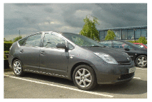
Figure 20.19. Toyota Prius – according to Jeremy Clarkson, “a very expensive, very complex, not terribly green, slow, cheaply made, and pointless way of moving around.”
Hybrid cars such as the Toyota Prius (figure 20.19) have more-efficient engines and electric regenerative braking, but to be honest, today’s hybrid vehicles don’t really stand out from the crowd (figure 20.9).
The horizontal bars in figure 20.9 highlight a few cars including two hybrids. Whereas the average new car in the UK emits 168 g, 12 the hybrid Prius 13 emits about 100 g of CO2 per km, as do several other non-hybrid vehicles – the VW Polo blue motion emits 99 g/km, and there’s a Smart car that emits 88 g/km.
The Lexus RX 400h is the second hybrid, advertised with the slogan “LOW POLLUTION. ZERO GUILT.” But its CO2 emissions are 192 g/km – worse than the average UK car! The advertising standards authority ruled that this advertisement breached the advertising codes on Truthfulness, Comparisons and Environmental claims. “We considered that … readers were likely to understand that the car caused little or no harm to the environment, which was not the case, and had low emissions in comparison with all cars, which was also not the case.”
In practice, hybrid technologies seem to give fuel savings of 20 or 30%. 14 So neither these petrol/electric hybrids, nor the petrol/hydraulic hybrid featured in figure 20.17 seems to me to have really cracked the transport challenge. A 30% reduction in fossil-fuel consumption is impressive, but it’s not enough by this book’s standards. Our opening assumption was that we want to get off fossil fuels, or at least to reduce fossil fuel use by 90%. Can this goal be achieved without reverting to bicycles?
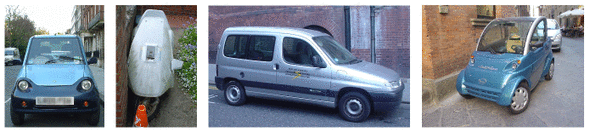
Figure 20.20. Electric vehicles. From left to right: the G-Wiz; the rotting corpse of a Sinclair C5; a Citroën Berlingo; and an Elettrica.
Electric vehicles
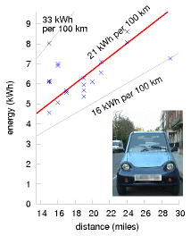
Figure 20.21. Electricity required to recharge a G-Wiz versus distance driven. Measurements were made at the socket.
Figure 20.22. Tesla Roadster: 15 kWh per 100 km. www.teslamotors.com.
The REVA electric car was launched in June 2001 in Bangalore and is exported to the UK as the G-Wiz. The G-Wiz’s electric motor has a peak power of 13 kW, and can produce a sustained power of 4.8 kW. The motor provides regenerative braking. It is powered by eight 6-volt lead acid batteries, which when fully charged give a range of “up to 77 km.” A full charge consumes 9.7 kWh of electricity. These figures imply a transport cost of 13 kWh per 100 km.
Manufacturers always quote the best possible performance of their products. What happens in real life? The real-life performance of a G-Wiz in London is shown in figure 20.21. Over the course of 19 recharges, the average transport cost of this G-Wiz is 21 kWh per 100 km – about four times better than an average fossil fuel car. The best result was 16 kWh per 100 km, and the worst was 33 kWh per 100 km. If you are interested in carbon emissions, 21 kWh per 100 km is equivalent to 105 g CO2 per km, assuming that electricity has a footprint of 500 g CO2 per kWh.
Now, the G-Wiz sits at one end of the performance spectrum. What if we demand more – more acceleration, more speed, and more range? At the other end of the spectrum is the Tesla Roadster. The Tesla Roadster 2008 has a range of 220 miles (354 km); its lithium-ion battery pack stores 53 kWh and weighs 450 kg (120 Wh/kg). The vehicle weighs 1220 kg and its motor’s maximum power is 185 kW. What is the energy-consumption of this muscle car? Remarkably, it’s better than the G-Wiz: 15 kWh per 100 km. Evidence that a range of 354 km should be enough for most people most of the time comes from the fact that only 8.3% of commuters travel more than 30 km to their workplace. 15
I’ve looked up the performance figures for lots of electric vehicles – they’re listed in this chapter’s end-notes 16 – and they seem to be consistent with this summary: electric vehicles can deliver transport at an energy cost of roughly 15 kWh per 100 km. That’s five times better than our baseline fossil-car, and significantly better than any hybrid cars. Hurray! To achieve economical transport, we don’t have to huddle together in public transport – we can still hurtle around, enjoying all the pleasures and freedoms of solo travel, thanks to electric vehicles.
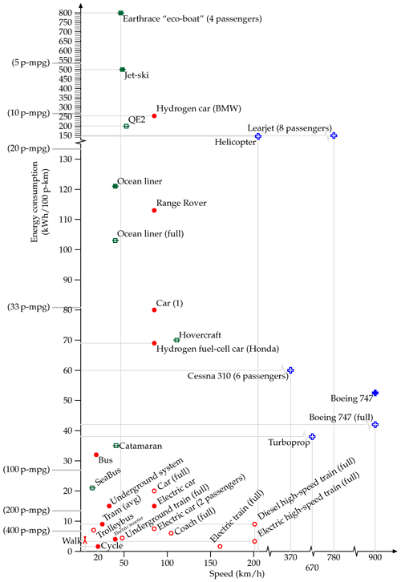
Figure 20.23. Energy requirements of different forms of passenger transport. The vertical coordinate shows the energy consumption in kWh per 100 passenger-km. The horizontal coordinate indicates the speed of the transport. The “Car (1)” is an average UK car doing 33 miles per gallon with a single occupant. The “Bus” is the average performance of all London buses. The “Underground system” shows the performance of the whole London Underground system. The catamaran is a diesel-powered vessel. I’ve indicated on the left-hand side equivalent fuel efficiencies in passenger-miles per imperial gallon (p-mpg). Hollow point-styles show best-practice performance, assuming all seats of a vehicle are in use. Filled point-styles indicate actual performance of a vehicle in typical use. See also figure 15.8 (energy requirements of freight transport).
This moment of celebration feels like a good time to unveil this chapter’s big summary diagram, figure 20.23, which shows the energy requirements of all the forms of passenger-transport we have discussed and a couple that are still to come.
OK, the race is over, and I’ve announced two winners – public transport, and electric vehicles. But are there any other options crossing the finishing line? We have yet to hear about the compressed-air-powered car and the hydrogen car. If either of these turns out to be better than electric car, it won’t affect the long-term picture very much: whichever of these three technologies we went for, the vehicles would be charged up using energy generated from a “green” source.
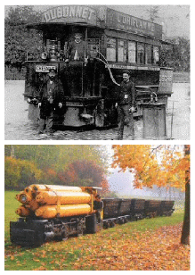
Figure 20.24. Top: A compressed-air tram taking on air and steam in Nantes. Powering the trams of Nantes used 4.4 kg of coal (36 kWh) per vehicle-km, or 115 kWh per 100 p-km, if the trams were full. [5qhvcb] Bottom: A compressed-air locomotive; weight 9.2 t, pressure 175 bar, power 26 kW; photo courtesy of Rüdiger Fach, Rolf-Dieter Reichert, and Frankfurter Feldbahnmuseum.
Figure 20.25. The Hummer H2H: embracing the green revolution, the American way. Photo courtesy of General Motors.
Compressed-air cars
Air-powered vehicles are not a new idea. Hundreds of trams powered by compressed air and hot water plied the streets of Nantes and Paris from 1879 to 1911. Figure 20.24 shows a German pneumatic locomotive from 1958. I think that in terms of energy efficiency the compressed-air technique for storing energy isn’t as good as electric batteries. The problem is that compressing the air generates heat that’s unlikely to be used efficiently; and expanding the air generates cold, another by-product that is unlikely to be used efficiently. But compressed air may be a superior technology to electric batteries in other ways. For example, air can be compressed thousands of times and doesn’t wear out! It’s interesting to note, however, that the first product sold by the Aircar company is actually an electric scooter. [www.theaircar.com/acf]
There’s talk of Tata Motors in India manufacturing air-cars, but it’s hard to be sure whether the compressed-air vehicle is going to see a revival, because no-one has published the specifications of any modern prototypes. Here’s the fundamental limitation: the energy-density of compressed-air energy-stores is only about 11–28 Wh per kg, 17 which is similar to lead-acid batteries, and roughly five times smaller than lithium-ion batteries. (See figure 26.13, for details of other storage technologies.) So the range of a compressed-air car will only ever be as good as the range of the earliest electric cars. Compressed-air storage systems do have three advantages over batteries: longer life, cheaper construction, and fewer nasty chemicals.
Hydrogen cars – blimp your ride
I think hydrogen is a hyped-up bandwagon. I’ll be delighted to be proved wrong, but I don’t see how hydrogen is going to help us with our energy problems. Hydrogen is not a miraculous source of energy; it’s just an energy carrier, like a rechargeable battery. And it is a rather inefficient energy carrier, with a whole bunch of practical defects.
The “hydrogen economy” received support from Nature magazine in a column praising California Governor Arnold Schwarzenegger for filling up a hydrogen-powered Hummer (figure 20.25). 18 Nature’s article lauded Arnold’s vision of hydrogen-powered cars replacing “polluting models” with the quote “the governor is a real-life climate action hero.” But the critical question that needs to be asked when such hydrogen heroism is on display is “where is the energy to come from to make the hydrogen?” Moreover, converting energy to and from hydrogen can only be done inefficiently – at least, with today’s technology.
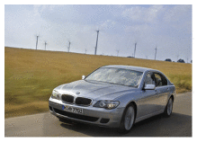
Figure 20.26. BMW Hydrogen 7. Energy consumption: 254 kWh per 100 km. Photo from BMW.
Here are some numbers.
- In the CUTE (Clean Urban Transport for Europe) project, which was intended to demonstrate the feasibility and reliability of fuelcell buses and hydrogen technology, fuelling the hydrogen buses required between 80% and 200% more energy than the baseline diesel bus. 19
- Fuelling the Hydrogen 7, the hydrogen-powered car made by BMW, requires 254 kWh per 100 km – 220% more energy than an average European car. 20
If our task were “please stop using fossil fuels for transport, allowing yourself the assumption that infinite quantities of green electricity are available for free,” then of course an energy-profligate transport solution like hydrogen might be a contender (though hydrogen faces other problems). But green electricity is not free. Indeed, getting green electricity on the scale of our current consumption is going to be very challenging. The fossil fuel challenge is an energy challenge. The climate-change problem is an energy problem. We need to focus on solutions that use less energy, not “solutions” that use more! I know of no form of land transport whose energy consumption is worse than this hydrogen car. (The only transport methods I know that are worse are jet-skis – using about 500 kWh per 100 km – and the Earthrace biodiesel-powered speed-boat, absurdly called an eco-boat, which uses 800 kWh per 100 p-km.)
(Figure omitted from this edition: third-party rights.)
Figure 20.27. The Earthrace “eco-boat.” Photo by David Castor.
(Figure omitted from this edition: third-party rights.)
Figure 20.28. The Honda FCX Clarity hydrogen-powered fuel-cell sedan, with a Jamie Lee Curtis for scale. Photo courtesy of automobiles.honda.com.
Hydrogen advocates may say “the BMW Hydrogen 7 is just an early prototype, and it’s a luxury car with lots of muscle – the technology is going to get more efficient.” Well, I hope so, because it has a lot of catching up to do. The Tesla Roadster (figure 20.22) is an early prototype too, and it’s also a luxury car with lots of muscle. And it’s more than ten times more energy-efficient than the Hydrogen 7! Feel free to put your money on the hydrogen horse if you want, and if it wins in the end, fine. But it seems daft to back the horse that’s so far behind in the race. Just look at figure 20.23 – if I hadn’t squished the top of the vertical axis, the hydrogen car would not have fitted on the page!
Yes, the Honda fuel-cell car, the FCX Clarity, does better – it rolls in at 69 kWh per 100 km – but my prediction is that after all the “zero-emissions” trumpeting is over, we’ll find that hydrogen cars use just as much energy as the average fossil car of today.
Here are some other problems with hydrogen. Hydrogen is a less convenient energy storage medium than most liquid fuels, because of its bulk, whether stored as a high pressure gas or as a liquid (which requires a temperature of -253 °C). Even at a pressure of 700 bar (which requires a hefty pressure vessel) its energy density (energy per unit volume) is 22% of gasoline’s. The cryogenic tank of the BMW Hydrogen 7 weighs 120 kg and stores 8 kg of hydrogen. Furthermore, hydrogen gradually leaks out of any practical container. If you park your hydrogen car at the railway station with a full tank and come back a week later, you should expect to find most of the hydrogen has gone.
What people actually bought, 2025
A section added in the 2026 revision. Note 16 lists what a careful observer could see coming in 2008, and almost none of it arrived. Here is the replacement — the five best-selling battery-electric cars in each of the four places that make them, in 2025.21
Europe. Tesla Model Y (about 151 000), then the Volkswagen ID.4 and ID.3, the Kia EV3, the Renault 5 E-Tech and the Škoda Elroq. Volkswagen displaced Tesla as the largest electric brand in Europe with about 274 000 sold across the EU, UK and EFTA. Electric cars took 20% of the European new-car market.
China. Geely Galaxy (about 205 000 in the first half alone), BYD Seagull (about 175 000), Tesla Model Y (about 171 000), BYD Yuan PLUS (about 78 000) and BYD Yuan UP (about 72 000). BYD took six of the top twenty places.
The United States. Tesla Model Y (about 358 000), Chevrolet Equinox EV (about 58 000), Ford Mustang Mach-E (about 52 000), Hyundai Ioniq 5 (about 47 000) and the Tesla Model 3.
Korea’s manufacturers, whose home market is small but whose exports are not, sell the Hyundai Ioniq 5 and Ioniq 9 and the Kia EV3, EV5 and EV6 — the Ioniq 5 being the only non-American, non-Chinese model in the American top five.
Three things in that list are worth more than the rankings.
The first is that Tesla is the only name that appears in all three markets, and the only survivor from note 16 — which is a remarkable record and also, on this book’s argument, beside the point. The transition did not need Tesla to win; it needed somebody to.
The second is the Seagull. It is a small car with a battery around 30 kWh, sold in China for the equivalent of well under £10 000, and it is second in the world’s largest market. Nothing in note 16 anticipated that the winning shape would be cheap and small rather than clever and slippery. Chapter A explains why it wins on energy: less frontal area, less mass, both terms of the model.
The third is that the American list is the heavy one. The Equinox and the Mach-E are mid-size sport-utility vehicles, and the best-selling electric pickup consumes around twice what the Seagull does per kilometre. The same technology, in three markets, is being used to make very different vehicles — which is chapter A’s point again, and the reason the fleet average sits at 21 kWh per 100 km rather than the 15 MacKay expected.
A caution about comparing their consumption figures, which matters more than it sounds. Europe rates cars on WLTP, America on the EPA cycle, China on CLTC — and they are not comparable. CLTC is the most optimistic and EPA the least, with differences of 15 to 30% on the same vehicle. A table of kWh per 100 km drawn across the three markets would be measuring three different things, which is exactly the boundary problem chapter M is about. This edition quotes European real-world measurements where it needs a number, for that reason.
Some questions about electric vehicles
You’ve shown that electric cars are more energy-efficient than fossil cars. But are they better if our objective is to reduce CO2 emissions, and the electricity is still generated by fossil power stations?
This is quite an easy calculation to do. Assume the electric vehicle’s energy cost is 20 kWh(e) per 100 km. (I think 15 kWh(e) per 100 km is perfectly possible, but let’s play sceptical in this calculation.) If grid electricity has a carbon footprint of 500 g per kWh(e) then the effective emissions of this vehicle are 100 g CO2 per km, which is as good as the best fossil cars (figure 20.9). So I conclude that switching to electric cars is already a good idea, even before we green our electricity supply.
Electric cars, like fossil cars, have costs of both manufacture and use. Electric cars may cost less to use, but if the batteries don’t last very long, shouldn’t you pay more attention to the manufacturing cost?
Yes, that’s a good point. My transport diagram shows only the use cost. If electric cars require new batteries every few years, my numbers may be underestimates. The batteries in a Prius are expected to last just 10 years, and a new set would cost £3500. Will anyone want to own a 10-year old Prius and pay that cost? It could be predicted that most Priuses will be junked at age 10 years. This is certainly a concern for all electric vehicles that have batteries. I guess I’m optimistic that, as we switch to electric vehicles, battery technology is going to improve.
I live in a hot place. How could I drive an electric car? I demand power-hungry air-conditioning!
There’s an elegant fix for this demand: fit 4 m2 of photovoltaic panels in the upward-facing surfaces of the electric car. If the air-conditioning is needed, the sun must surely be shining. 20%-efficient panels will generate up to 800 W, which is enough to power a car’s air-conditioning. The panels might even make a useful contribution to charging the car when it’s parked, too. Solar-powered vehicle cooling was included in a Mazda in 1993; the solar cells were embedded in the glass sunroof.
I live in a cold place. How could I drive an electric car? I demand power-hungry heating!
The motor of an electric vehicle, when it’s running, will on average use something like 10 kW, with an efficiency of 90–95%. Some of the lost power, the other 5–10%, will be dissipated as heat in the motor. Perhaps electric cars that are going to be used in cold places can be carefully designed so that this motor-generated heat, which might amount to 250 or 500 W, can be piped from the motor into the car. That much power would provide some significant windscreen demisting or body-warming.
Are lithium-ion batteries safe in an accident?
Some lithium-ion batteries are unsafe when short-circuited or overheated, but the battery industry is now producing safer batteries such as lithium phosphate. There’s a fun safety video at www.valence.com.
Is there enough lithium to make all the batteries for a huge fleet of electric cars?
World lithium reserves are estimated to be 9.5 million tons in ore deposits (chapter 24). A lithium-ion battery is 3% lithium. 22 If we assume each vehicle has a 200 kg battery, then we need 6 kg of lithium per vehicle. So the estimated reserves in ore deposits are enough to make the batteries for 1.6 billion vehicles. That’s more than the number of cars in the world today (roughly 1 billion) – but not much more, so the amount of lithium may be a concern, especially when we take into account the competing ambitions of the nuclear fusion posse (Chapter 24) to guzzle lithium in their reactors. There’s many thousands times more lithium in sea water, so perhaps the oceans will provide a useful backup. However, lithium specialist R. Keith Evans says 23 “concerns regarding lithium availability for hybrid or electric vehicle batteries or other foreseeable applications are unfounded.” And anyway, other lithium-free battery technologies such as zinc-air rechargeables are being developed [www.revolttechnology.com]. I think the electric car is a goer!
Figure 20.29. Airbus A380.
What became of the hydrogen car
A section added in the 2026 revision. This chapter calls hydrogen “a hyped-up bandwagon” and says “I’ll be delighted to be proved wrong, but I don’t see how hydrogen is going to help us with our energy problems.” He was not proved wrong.
The record. Honda ended production of the Clarity Fuel Cell in 2021, citing low demand. Shell abandoned its American hydrogen filling stations in 2024, so there are now fewer places to refuel than five years ago — about 56 consumer stations in the whole of North America, almost all on the Californian coast. Toyota sold 147 Mirais in the United States through the third quarter of 2025, down 54% on the year. Three hydrogen cars remain on sale in America, all of them in one state.24
MacKay’s arithmetic explains why, and it has not changed: the BMW Hydrogen 7 he cites needed 254 kWh per 100 km, 220% more than an average European car, and the CUTE fuel-cell buses needed 80 to 200% more energy than the diesel they replaced. A carrier that loses most of the energy put into it does not win a race against one that loses little, and eighteen years of engineering has not closed a gap of that size.
The ladder, and where hydrogen did go
The useful framework since is Michael Liebreich’s Clean Hydrogen Ladder, which ranks uses by how likely hydrogen is to beat the alternatives. Fertilizer, hydrogen for refining, methanol and steel sit at the top, because there is no other way to do those things. Passenger cars sit on the bottom rung, alongside domestic heating, because a battery does the same job at a fraction of the energy.25
The instructive part is that this book already contains both ends of that ladder. Chapter 13’s 2 kWh/d per person of fertilizer energy is hydrogen — made from natural gas by the Haber–Bosch process, and the single largest existing use of hydrogen in the world. Chapter 28a discusses the same ladder from the electricity side.
So hydrogen did not fail. It went where the physics sent it, which is into the chemical industry, and stayed out of the place the hype put it, which was the car. MacKay guessed that in 2008 with a sentence and a fuel-consumption figure.
Trains that are not full
Figure 20.6 in this chapter shows an almost empty carriage — “three men and a cello” — under a caption noting that some trains aren’t full. It is a small joke carrying a large point, and a Swedish argument makes it explicit.
Writing in 2024, the blog Cornucopia? argued that nineteenth-century railway technology cannot work economically in a country as sparsely populated as Sweden. Its points are worth setting out because they are quantitative. A railway must be maintained along its entire route — some 500 km between Gothenburg and Stockholm — while an aeroplane needs only a few kilometres of asphalt at each end, and maintenance wages scale roughly linearly with track length. On the same distance as Gothenburg to Stockholm, it notes, continental Europe fits Paris, Reims, Brussels, Rotterdam and Amsterdam. And 99% of Swedes are not within walking distance of a station at both ends of a journey, which is what makes door-to-door road transport competitive.26
But this is not an energy argument
It is worth being precise about what that case does and does not establish, because this chapter is about joules.
MacKay’s transport figures are explicitly for vehicles “on best behaviour” — his high-speed electric train at 3 kWh per 100 seat-km assumes every seat sold. Relax that:
| Occupancy | kWh/100 p-km | Against a single-occupant car |
|---|---|---|
| 100% | 3.0 | 27× better |
| 50% | 6.0 | 13× better |
| 30% | 10.0 | 8× better |
| 20% | 15.0 | 5× better |
| 10% | 30.0 | 3× better |
A train has to be nearly empty before it stops beating a car, and a rural Swedish service running at a fifth of capacity is still five times better per passenger-kilometre than driving alone. The energy case for rail survives poor occupancy with a wide margin.
What does not survive is the cost case, and that is what the Swedish argument is really about: staff, track and signalling for 500 km, paid for by whoever is on board. The objection is economic and geographic, not thermodynamic.
There is one genuine energy point buried in it, though, and this chapter does not count it. MacKay’s transport figures are the energy of motion. They exclude the energy embodied in building and maintaining the infrastructure — the 500 km of track against the aeroplane’s few kilometres of asphalt. For a busy corridor that overhead disappears into the passenger numbers. For a line carrying a few trains a day it may not, and nothing in this chapter’s arithmetic would reveal it. That is the same boundary problem chapter M is about: what you include decides what you conclude, and a comparison of vehicles is not a comparison of transport systems.
Time is a cost too
There is a second thing this chapter’s units cannot see, and it is bigger than the infrastructure overhead. Time has a price. Every transport appraisal in the world puts a money value on travel time saved — it is usually the largest single benefit in the case for a new road or railway — and both travellers and shippers pay it whether or not anybody writes it down.
For freight the ratio is stark, and it is the clearest evidence that the price is real. Air cargo carries less than 1% of world trade by weight and more than 35% of it by value. That is not a statement about aeroplanes; it is the value of time, revealed. Goods that can wait go by sea, and increasingly by rail — Eurasian rail freight costs roughly 80% less than air and takes about half the time of sea. Goods that cannot wait go by air and pay the whole energy penalty this chapter describes, because for a container of pharmaceuticals or aircraft spares the cost of the delay exceeds the cost of the kerosene by a wide margin. Freight chooses its mode on total logistics cost, of which the fuel is a small part and the money tied up in cargo sitting still is a large one.27
For passengers the picture is less flattering to rail than the energy arithmetic suggests, and the direction may be the opposite of what a reader expects. A 2025 survey of 142 routes across 31 European countries found flying cheaper than the train on 54% of cross-border routes and the train cheaper on only 39%. France was the worst case, with 95% of cross-border routes more expensive by rail, then Spain at 92%, the United Kingdom at 90% and Italy at 88%. The extreme was Barcelona to London: €14.99 by air against as much as €389 by rail, a factor of twenty-six. Domestically the picture reverses — trains were cheaper on 70% of within-country routes — which says something about how cross-border rail is ticketed, taxed and operated rather than about steel wheels. Aviation fuel is untaxed and cross-border rail is not.28
So the ranking in figure 20.23 is a ranking in joules and nothing else. The traveller is choosing on price and elapsed time, the shipper on total logistics cost, and on those axes the order is frequently reversed. That is not an argument against rail; it is an argument that the energy case and the case people actually decide on are different cases, and that closing the gap is a matter of fares, taxes and journey times rather than of physics. This chapter can tell you that a train beats a plane by a factor of ten in energy. It cannot tell you why the plane is cheaper, and it is the second fact that fills the aeroplane.
The future of flying?
The superjumbo A380 is said by Airbus to be “a highly fuel-efficient aircraft.” In fact, it burns just 12% less fuel per passenger than a 747.
Boeing has announced similar breakthroughs: their new 747–8 Intercontinental, trumpeted for its planet-saving properties, is (according to Boeing’s advertisements) only 15% more fuel-efficient than a 747–400.
This slender rate of progress (contrasted with cars, where changes in technology deliver two-fold or even ten-fold improvements in efficiency) is explained in Technical Chapter C. Planes are up against a fundamental limit imposed by the laws of physics. Any plane, whatever its size, has to expend an energy of about 0.4 kWh per ton-km on keeping up and keeping moving. Planes have already been fantastically optimized, and there is no prospect of significant improvements in plane efficiency.
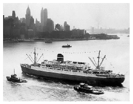
Figure 20.30. TSS Rijndam.
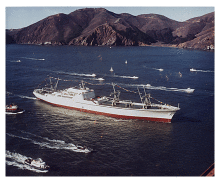
Figure 20.31. NS Savannah, the first commercial nuclear-powered cargo vessel, passing under the Golden Gate Bridge in 1962.
(Figure omitted from this edition: third-party rights.)
Figure 20.32. The nuclear ice-breaker Yamal, carrying 100 tourists to the North Pole in 2001. Photo by Wofratz.
For a time, I thought that the way to solve the long-distance-transport problem was to revert to the way it was done before planes: ocean liners. Then I looked at the numbers. The sad truth is that ocean liners use more energy per passenger-km than jumbo jets. The QE2 uses four times as much energy per passenger-km as a jumbo. OK, it’s a luxury vessel; can we do better with slower tourist-class liners? From 1952 to 1968, the economical way to cross the Atlantic was in two Dutch-built liners known as “The Economy Twins,” the Maasdam and the Rijndam. 29 These travelled at 16.5 knots (30.5 km/h), so the crossing from Britain to New York took eight days. Their energy consumption, if they carried a full load of 893 passengers, was 103 kWh per 100 p-km. At a typical 85% occupancy, the energy consumption was 121 kWh per 100 pkm – more than twice that of the jumbo jet. To be fair to the boats, they are not only providing transportation: they also provide the passengers and crew with hot air, hot water, light, and entertainment for several days; but the energy saved back home from being cooped up on the boat is dwarfed by the boat’s energy consumption, which, in the case of the QE2, is about 3000 kWh per day per passenger.
So, sadly, I don’t think boats are going to beat planes in energy consumption. If eventually we want a way of travelling large distances without fossil fuels, perhaps nuclear-powered ships are an interesting option (figures 20.31 & 20.32).
Water: the corner of the diagram that moved
A section added in the 2026 revision. Figure 20.23 has an empty region, and MacKay noticed it: fast, on water, and cheap in energy. The only water entries anywhere in this chapter are the diesel catamaran in that figure and the liner above, and the liner needs 121 kWh per 100 passenger-km to manage 30 km/h. Every displacement hull is in that trap. The energy goes into making waves, and wave-making drag climbs steeply as the hull approaches its own hull speed, so a boat that wants to go faster has to pay disproportionately for it.
A hull that lifts clear of the water on foils escapes the trap altogether. The wetted area collapses from a whole hull to a few small wings, and the drag collapses with it. Hydrofoils are not new — the Soviet Raketa riverboats date from 1957 — but they were mechanically fussy and needed a large engine to get onto the foils. What has changed is that active electronic flight control, developed for drones, keeps a foiling hull stable without a pilot fighting it, and batteries make the small steady cruise power practical.
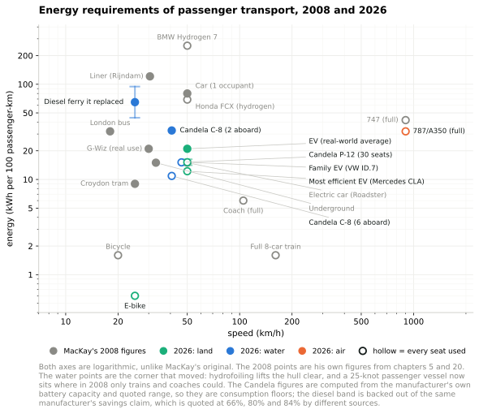
Figure 20.23b. Figure 20.23 remade for 2026, with both axes logarithmic. Added in the 2026 revision. The grey points are MacKay’s own figures from chapters 5 and 20. Hollow markers assume every seat is used, filled markers are typical use — his convention, kept.30
The Swedish firm Candela builds hydrofoiling electric boats, and the arithmetic can be done from its published specifications rather than its advertising. The P-12, a thirty-seat passenger shuttle, carries 336 kWh of usable battery and is quoted at up to 40 nautical miles at its 25-knot service speed. That is 4.5 kWh per vessel-kilometre, or 15 kWh per 100 passenger-km with every seat filled, at 46 km/h. Compare that with the number this chapter already gives for the entire London Underground — lighting, lifts, depots and workshops included — which is also 15. The leisure C-8 carries 69 kWh and is quoted at 57 nautical miles at 22 knots: 0.65 kWh per kilometre, so 11 kWh per 100 passenger-km with six aboard, and 33 with two.31
Against what it replaced, the comparison is starker. The P-12 named Nova has run route 89 between Ekerö and central Stockholm since 2024, alongside the conventional diesel vessels Lux and Sunnan. Candela’s claim for the energy saving per passenger-kilometre is quoted as 66%, 80% and 84% in different places, which is itself worth noting; taken at face value it puts the diesel boats it replaced somewhere between 44 and 94 kWh per 100 passenger-km. Either end of that band is a bad number, and the P-12 is a fifth of it. The journey time fell from 55 minutes to about 30, and passenger numbers on the route rose 22.5% during the trial.32
The commercial position in 2026. Over forty P-12s are on order, which makes it the best-selling electric passenger vessel; the first American one is going to Lake Tahoe, where a thirty-minute crossing replaces a drive around the lake that twenty thousand vehicles a day currently make. In the United States the leisure end has started moving too: Arc, in Los Angeles, delivers a 226 kWh electric wake boat — a battery three times the size of an ordinary electric car’s, in a 23-foot boat — and at Niagara Falls the two Maid of the Mist catamarans have run entirely on batteries since 2020, taking about 38 kWh per trip and recharging in the seven minutes passengers take to get on and off.33
Three cautions before this is oversold. First, these are consumption figures computed from quoted ranges, and a quoted range is an upper bound, so the real consumption is at least this and probably a little more. Second, the per-passenger figures assume the seats are used; a leisure boat with two people aboard is three times worse per passenger, and the diagram shows both. Third, and most important, none of this touches the ships that matter for energy. Deep-sea shipping is already efficient per tonne-kilometre, as chapter 15 says, and nothing here scales to it: a foil cannot lift a container ship, and a battery cannot cross an ocean. What has changed is a specific, useful corner — fast passenger transport over water in and around cities — where MacKay’s diagram had nothing worth having and now has something better than a bus.
The airship that never arrives
A section added in the 2026 revision. Figure 20.23b has a second empty region, in the other direction: slow, heavy-lifting, and cheap. That is the airship’s claim, and it has been the airship’s claim for a century.
The claim is physically sound. A wing has to be pushed through air to hold anything up, which is the 0.4 kWh per ton-km floor that chapter C derives and that no aeroplane escapes. A gas envelope holds itself up for nothing, and the engines are then needed only to overcome drag and to manoeuvre. Hybrid Air Vehicles, in Bedford, quotes 9 grams of CO2 per passenger-kilometre for the hybrid-electric configuration of its Airlander 10, against something over ten times that for a regional jet on the same route. Converted to this book’s units, 9 g of CO2 is about 3.4 kWh per 100 passenger-km, at 90 seats and roughly 130 km/h. Put that in context rather than letting it float: it is close to this chapter’s figure of 3 kWh per 100 seat-km for a full electric high-speed train, and still twice the 1.6 of the eight-carriage train in figure 20.4. So an airship does not beat a train. What it claims is a train’s efficiency in a machine that needs no track — which, in the light of the section above on 500 km of Swedish railway, is exactly the interesting claim.34
So why is there no point on the diagram? Because the airship’s record is not a technical record, it is a commercial one, and it is uniformly bad. The Airlander 10 airframe first flew in 2012 as the US Army’s Long Endurance Multi-Intelligence Vehicle; that programme was cancelled the following year. Hybrid Air Vehicles bought the aircraft back, flew it in 2016, damaged it on landing on its second flight, and lost it in 2017 when it broke free of its mooring and deflated. The prototype was retired in 2019. A decade earlier CargoLifter had gone bankrupt in 2002, having built what was then the largest self-supporting hall in the world and no airship to put in it. The production Airlander 10 entered type certification with the Civil Aviation Authority in the 2020s, has around £1 billion of reserved orders including twenty aircraft for Air Nostrum, and is planned to fly in 2026 and enter service in 2028.35
That pattern — sound physics, plausible numbers, repeated commercial failure — is the point, and it is a point this book keeps arriving at from different directions. Chapter 28a puts it as the constraint having moved: the binding limits on energy technologies are now prices, queues, permits and procurement cycles rather than joules. An airship is slow, needs a large ground crew and a large piece of ground, is grounded by weather that would not trouble a turboprop, and has to be insured and certified as a novel category. None of those is a thermodynamic objection and all of them have killed airships. A good number on this diagram is necessary and it is nowhere near sufficient, and the honest thing to say in 2026 is that the Airlander has orders but no certificate and no service, exactly as its predecessors did.
Electrofuels: the aeroplane’s only route
A section added in the 2026 revision. Chapter 5 establishes that battery-electric flight does not work for anything but short hops, and nothing since has changed that. So if aviation is to leave fossil fuel it needs a liquid hydrocarbon made some other way, and the honest question is what that costs in electricity.
There is now a good answer, from an unexpected quarter.
What that means for flying
Now apply it in this book’s units, which is the whole point of the exercise.
| Fuel needed | Electricity to make it | Against Britain’s whole grid | |
|---|---|---|---|
| UK aviation today (7.4 kWh/d per person) | 7.4 | 12.3 | 1.1× |
| MacKay’s frequent flyer (30 kWh/d) | 30 | 50 | 4.5× |
Britain currently generates 11.2 kWh/d per person of electricity, from everything — every wind turbine, every solar panel, both nuclear stations, all the gas. Flying the amount Britain already flies, on synthetic fuel, would need more electricity than the entire British grid produces.
That is not an argument against electrofuels. It is the reason chapter 5’s conclusion stands: flying is not expensive because aeroplanes are inefficient. It is expensive because flying is a lot of energy, and moving it from a well to a wire does not make it less.
The fuel itself is cleaner than the fuel it replaces
Everything above is about how much electricity it takes to make the stuff. There is a separate question — what happens when you burn it — and on that question the electrofuel is not merely equivalent to fossil kerosene, it is better, for a reason worth understanding.
Fossil jet fuel is a distillate cut, and it carries what the crude carried: sulphur, and aromatics. Aromatics are there partly by accident and partly on purpose, because they swell the nitrile seals in older fuel systems. They also burn dirtily. Aromatic compounds are what produce soot, and soot particles are what contrail ice crystals nucleate on. Synthetic paraffinic kerosene, whether made by Fischer–Tropsch from syngas or by the power-to-liquid route this section describes, is built molecule by molecule from carbon monoxide and hydrogen. It contains essentially no sulphur and almost no aromatics, because nobody put any in.
The measured consequence is large. In the ECLIF3 campaign, in which Airbus, Rolls-Royce, the German Aerospace Center and Neste flew an A350 with both engines on 100% synthetic fuel and chased it with an instrumented aircraft, the number of contrail ice crystals per mass of fuel burned fell by 56% against a reference Jet A-1. Earlier DLR–NASA campaigns on an A320 running blends found 50–70% reductions in soot and in ice-crystal number. This matters more than it sounds, because contrails and the cirrus they seed are not a footnote to aviation’s climate effect — on most recent accounting the non-CO2 effects are comparable to, or larger than, the CO2. There is a ground-level benefit too: less particulate matter in the air around airports, which is a public-health argument rather than a climate one.37
There is even a small efficiency gain. Paraffinic fuel has a slightly higher energy content per kilogram than conventional kerosene, though a slightly lower one per litre because it is less dense. On a long flight, which is weight-limited rather than volume-limited, that is worth a percent or two of fuel burn — trivial beside the numbers in this chapter, but in the right direction rather than the wrong one.
Two things must be said against over-reading this. The comparison is tank-to-wake: it describes the aircraft, not the supply chain. Well-to-wake, the electrofuel is far worse than using the electricity directly, and that is the 60% figure above — the fuel is clean where it burns and expensive where it is made, and those are answers to different questions. And the aromatics do a job: seal compatibility is why 100% synthetic fuel needed testing at all, and why blend limits existed. ECLIF3 was in part the demonstration that a modern airframe tolerates the neat fuel.
Where this leaves aviation
Four things follow, and they are worth separating.
Electrofuel is the right answer for aviation and the wrong one for almost everything else. On Liebreich’s ladder, above, the top rungs are the uses with no alternative. Aviation is one: batteries cannot do it, and hydrogen in an airframe is chapter 20’s blimp problem. That is a much stronger case than the hydrogen car ever had.
But at 60% it is a multiplier on the green electricity problem, not a solution to it. Every kilowatt-hour of jet fuel demands 1.7 of electricity, and chapter 18 records that Britain is at 3% of its renewable ceiling. Synthetic aviation fuel makes the production chapters harder, not easier.
And it does not reduce the demand for flying. MacKay’s chapter 5 makes that point once and it survives: the only reliable way to reduce the energy cost of a flight is not to take it. Everything else is a change of supply chain.
But it is a better fuel, not merely a differently-sourced one. The soot and contrail reductions above are a real benefit that the kilowatt-hour accounting in this chapter cannot show, and they arrive on the day the fuel is loaded rather than at some future date when the grid is clean. That is unusual among the options in this book, and it deserves to be counted.
The military and civilian cases want opposite machines
There is a further point, and it explains why the Navy’s economics cannot simply be lifted into civilian use.
For the military, the 40% loss is worth paying, and efficiency is not the product. What the Navy is buying is the removal of a supply chain. Fuel delivered at sea cost $6 to $7 a gallon fully burdened against a standard price of $3.70, because the difference is tankers, escorts, storage and the people who operate them — and in a contested sea that tail is not merely expensive but vulnerable. A process that turns a reactor already in the hull into fuel alongside makes the tanker unnecessary. Losing 40% of the energy is a small price for not having to defend a convoy. Liquid fuel also stores indefinitely and needs no new handling equipment, which a battery does not and does.
For civilian use the requirement inverts, and it is not efficiency either — it is modularity. The electricity that ought to make synthetic fuel is the surplus: the hours chapter 28a describes, when wind and solar produce more than the system wants and the price falls to zero or below. An electrofuel plant is one of the few loads large enough to absorb that surplus and indifferent enough to when it arrives, since the product is a liquid in a tank rather than a service delivered on demand.
But that requires a plant that can run intermittently without being ruined by it, and the economics are brutal about what that means. Capital cost per gallon scales roughly as the inverse of the capacity factor: a plant designed to run flat out and then operated a fifth of the time makes fuel at about five times the capital cost per unit. So the civilian machine must be cheap, small and many — modular units that can start, stop and follow the price — where the Navy’s is large, dear and continuous, sized around a dedicated reactor.
Those are not the same product, and the Navy’s $1.48-a-gallon lower bound assumes the continuous case. The technology transfers; the economics do not.
This is the demand side of chapter 28a’s argument arriving in a new place. That chapter’s conclusion is that the value of renewable electricity falls as it grows unless something turns up to consume the surplus in the hours it appears. Chapter 7 offers heat and storage; chapter 11a notes that data centres could in principle but are built not to. A modular electrofuel plant is the candidate with the largest appetite and the least impatience.
Fabricated, not constructed
There is a reason to think the capital cost problem is soluble, and this book has already established it twice without naming it.
Chapter 6 records that solar electricity fell to roughly a tenth of what MacKay assumed. Chapter 10 records that offshore wind rose to three to five times what he assumed. The physics was not the difference. Solar modules are fabricated on a production line and offshore wind farms are constructed at sea, and manufactured things descend a learning curve while constructed things do not.
A military fuel module is designed to be built in a factory, shipped and installed — because that is what a deployable system means. That places it, structurally, on the solar side of the divide rather than the offshore-wind side. Serial production is the one mechanism that has reliably made energy hardware cheap, and it is the mechanism a bespoke chemical plant is denied.
And the natural home is a nuclear site
The other half of the answer changes the argument again, and it is worth following because it cuts against what I said above.
Pair the modules with a nuclear station and four problems solve at once. The capacity factor goes back up, which is what the capital cost needed. The grid connection already exists, which chapter 11a shows is now the scarcest thing in the system — a data centre in west London waits years for what a licensed nuclear site already holds. The land, security, cooling water and operators are in place. And the output serves both customers: aviation fuel for airlines, and the same specification of fuel for a navy that would rather not defend a convoy.
The catch is that this is no longer the surplus-absorbing machine of the previous section. A plant running on firm nuclear output is consuming electricity that the grid would otherwise have; it does not fill chapter 28a’s zero-price hours, and it does not raise anybody’s capture price. It is a good business and a poor flexibility service, and the version that would help the cannibalisation problem is the one whose economics are hardest.
So the honest position is that electrofuel has two plausible futures with different virtues. Paired with nuclear it is buildable now, dual-use, and queue-free, and it makes aviation fuel without making the grid any easier. Built cheap enough to chase surplus, it would do both — and nobody has yet demonstrated the second.
What about freight?
International shipping is a surprisingly efficient user of fossil fuels; so getting road transport off fossil fuels is a higher priority than getting ships off fossil fuels. But fossil fuels are a finite resource, and eventually ships must be powered by something else. Biofuels may work out. Another option will be nuclear power. The first nuclear-powered ship for carrying cargo and passengers was the NS Savannah, launched in 1962 as part of President Dwight D. Eisenhower’s Atoms for Peace initiative (figure 20.31). Powered by one 74-MW nuclear reactor driving a 15-MW motor, the Savannah had a service speed of 21 knots (39 km/h) and could carry 60 passengers and 14000 t of cargo. That’s a cargo transport cost of 0.14 kWh per ton-km. She could travel 500 000 km without refuelling. There are already many nuclear-powered ships, both military and civilian. Russia has ten nuclear-powered ice-breakers, for example, of which seven are still active. Figure 20.32 shows the nuclear ice-breaker Yamal, which has two 171-MW reactors, and motors that can deliver 55 MW.
Nuclear ships, and why they are still not here
A section added in the 2026 revision. MacKay raises nuclear propulsion twice — once for long-distance passengers, once for freight — and both times he raises it and leaves it, because in 2008 there was nothing to report. There is now.
Start with the thing his own numbers already say, because it is not what a reader expects. He gives the Savannah a cargo transport cost of 0.14 kWh per ton-km. Chapter 15 gives a container ship, the Ever Uberty, 0.015 kWh per ton-km on MacKay’s 2008 figures. The nuclear ship is ten times worse. That comparison is not quite fair — the Savannah was a 1962 passenger-and-cargo demonstrator carrying sixty passengers and their staterooms, doing 21 knots with a heavy shield where cargo would otherwise be, and she was never optimised for anything — but the direction of the surprise is the point. Nuclear propulsion does not make a ship efficient. It changes what the ship burns.
Which is exactly why it is being looked at again. Shipping’s problem is not that it is wasteful; chapter 15’s whole argument is that it is not, and that Britain’s share of international shipping is only about 4 kWh per day per person. The problem is that everything this chapter has offered as a replacement fails at sea. Batteries cannot cross an ocean — the same forty-to-one gap against hydrocarbons that grounds electric aviation. Hydrogen sits in the contested middle of Liebreich’s ladder. Electrofuels work but, as the section above shows, multiply the green-electricity problem by 1.7 rather than solving it. A reactor is the only option on the list that carries its energy density with it.
The historical record is worse than the airship’s. Four nuclear merchant ships have ever been built. The Savannah (1962) was a technical success and an economic failure, and was laid up in 1972. West Germany’s Otto Hahn (1968) worked well enough as an ore carrier, covering 650 000 nautical miles on nuclear power, and had her reactor taken out and replaced by a diesel plant in 1979, after eleven years. Japan’s Mutsu leaked radiation through a faulty shield on her first criticality in 1974, was refused entry by her own home port, and never carried commercial cargo. Only the Soviet-built Sevmorput (1988) had a long career, and she has been laid up since 2023 without being formally decommissioned. So as of 2026 the count of nuclear merchant ships trading anywhere in the world is zero, sixty-four years after the first one sailed.38
What is new is institutional, not technical. In September 2024 Maersk, Lloyd’s Register and Core Power — which integrates other companies’ reactors rather than building its own — began a twelve-month study of the regulatory requirements for a fourth-generation reactor in a European feeder containership. In June 2026 the same parties, joined by the Port of Rotterdam, published Enabling Nuclear-Powered Feeder Ships, a joint development project on port-call feasibility. Its central finding deserves quoting because it is this book’s thesis stated by the industry itself: the principal barriers to nuclear ship port calls “are not technical, but relate instead to local and international regulatory alignment, governance, risk management integration and public acceptance.” The International Maritime Organization is revising its Code of Safety for Nuclear Merchant Ships, and the International Atomic Energy Agency has an initiative to support it. China’s state shipbuilder has separately published a design for a 24 000-container molten-salt-powered vessel, the KUN-24AP, which the classification society DNV has given approval in principle.39
The obstacle, named precisely: a treaty that never entered into force
“Not technical” is the right answer but it is not yet a useful one, because it does not say what the barrier is. A 2026 Policy Exchange report on British maritime nuclear names it exactly, and the answer is smaller and more fixable than the phrase suggests.
There is no liability regime for a reactor that is also a ship. The Brussels Convention on the Liability of Operators of Nuclear Ships was written in 1962 for precisely this case — the year the Savannah was commissioned — and it never entered into force. The conventions that do work, Paris and Vienna, are built around fixed nuclear installations and around nuclear material in transit. A propulsion reactor is neither: it is the installation and the means of transport at once, and it crosses jurisdictions continuously. The consequence is stated by the report in a single sentence that is worth more than any technical assessment: insurers cannot price risk when they cannot determine which liability regime applies.
That is why the Savannah was turned away from ports in the 1960s, and it is the same unresolved gap sixty-four years later. Not physics, not engineering, not even public opinion in the first instance — an unratified treaty.
The window is now open and it closes in 2030. The IMO’s Code of Safety for Nuclear Merchant Ships dates from 1981 and no ship has ever been built to it — Sevmorput, laid down after it, was built to Soviet domestic rules. Its Sub-Committee on Ship Design and Construction agreed a work plan to overhaul it in January 2026, with an initial review at the Maritime Safety Committee in May 2026 and adoption targeted for 2030. Whatever is written into that Code in the next four years determines whether the ships in this section are buildable.
And the central recommendation is one this book has already made from the other side. Policy Exchange’s proposal is fleet licensing: separate reactor design approval from marine integration, approve modules once, and “regulate serial deployment rather than treat each vessel as a first-of-a-kind case.” That is precisely the argument of the “Fabricated, not constructed” section above, on why solar fell tenfold while offshore wind rose — restated as a regulatory proposal rather than a manufacturing one. Serial production is what makes energy hardware cheap; a licensing regime that treats every hull as a prototype forbids serial production by construction, whatever the shipyard does.
The report is a think-tank argument for British strategic advantage and should be read as one — its framing is national-security and industrial-policy, and its recommendations are shaped to give Britain a role. But the diagnosis does not depend on the framing. The UK-registered trading fleet is 0.4% of world deadweight tonnage, or about 4% once ships beneficially owned or managed from Britain are counted, and it will not out-build East Asia; what it still holds is the IMO’s headquarters and an insurance market that wrote £104.8 billion of premiums in 2024. On this particular obstacle, those are the relevant assets, which is an unusual thing to be able to say about an energy technology.40
Convoys, and the reason they keep being proposed
There is a variant worth setting out, because it is the obvious answer to the economics and it has a name. Instead of a reactor in every hull, put one large reactor in one hull and let it power several. A ship carrying a 345 MW reactor could supply propulsive electricity to about four large ships, whose main engines run around 80 MW — or to roughly twenty feeder ships, whose engines are nearer 15 MW. The ratio is the whole point, and it depends entirely on what size of ship is being served. The Norwegian designer Ulstein has taken the idea furthest with a matched pair: Thor, a replenishment and rescue vessel carrying a thorium molten-salt reactor, and Sif, a battery-electric expedition cruise ship that Thor recharges at sea; Thor’s charging capacity is sized for four Sifs at once. Core Power’s Liberty programme proposes the moored version — floating nuclear plants built on a shipyard production line, towed to a port, powering the ships tied up alongside as well as the shore.43
The attraction is real and it is not primarily about energy. It decouples the number of reactors from the number of ships, and the reactor count is what drives everything difficult: licensing, safeguards, trained crews, insurance, the port-call negotiation above. Twenty conventional feeder ships served by one reactor is twenty ships’ worth of decarbonisation for one licensing problem. It is the same fabricated-not-constructed logic that made solar cheap, applied to the licensing burden rather than to the hardware.
The objections are equally real. Power transfer at sea is not a solved problem: cable or charging transfer requires station-keeping in weather that does not cooperate, and shipping’s whole economic model is ships going where the cargo is, independently, on their own schedules — a convoy is a nineteenth-century wartime arrangement, not a container-line one. Every ship in the group becomes dependent on one hull. And none of it exists. Thor and Sif are renderings, and the reactors these concepts assume are not yet available: the thorium molten-salt designs behind Thor and the KUN-24AP have no operating commercial example anywhere in the world, and Core Power’s own floating-plant work is assessing a light-water design, BWXT’s mPower, which is a shelved programme being revived.
Where the constraints point: a military replenishment ship
Put the two constraints side by side and a specific configuration falls out. The reactor has to stay in military hands, because that is where the fuel exemption lives. The convoy idea is attractive because it decouples reactor count from ship count. Both point at the same vessel: a naval replenishment ship, which is a hull navies already build, already operate in company with others, and already bring alongside allied warships to service.
And this book has already described the machine it would carry. The section above on the Naval Research Laboratory’s seawater-to-fuel work is exactly this proposition: reactor electricity plus seawater in, jet fuel and diesel out, at about 60% conversion, developed for the express purpose of removing the tanker from a contested area. A replenishment vessel producing both electricity alongside and synthetic hydrocarbon for the ships around it is not two ideas bolted together. It is the Navy’s own programme, with the surplus sold. No navy has proposed this, and nothing in this subsection is a report of anything under way — it is where the constraints set out above point, written down so that the reader can judge whether they point anywhere sensible.
It also disposes of the convoy’s worst objection, and more completely than underway replenishment would. Electricity has to be handed over while both ships are moving, because it cannot be stored in any quantity that matters; that is the unsolved part. Fuel can be stored, so it need not be transferred at sea at all. The receiving ship does not have to travel in company, keep station, carry replenishment rigs or train a crew to use them — those are naval capabilities, and merchant ships have none of them. It bunkers alongside or from a barge, on its own schedule, exactly as it does today, and burns a drop-in hydrocarbon in the engine it already has. The convoy stops being a formation and becomes a supply relationship, which is the only form shipping can actually accommodate.
And the two modes compose rather than compete. A vessel could take electricity by cable when the weather, the mission and the receiver’s fittings allow, and fuel when they do not, from the same reactor — the flexibility being on the supply side, where it is cheap, rather than in every receiving hull, where it is not. The receivers this suits best are the ones the rest of this chapter finds hardest: fast craft, whose power demand is high and whose stored energy runs out quickly. A hydrofoil doing 25 knots on 336 kWh is limited by where it can next take energy on board, not by anything about the boat. A refuelling or recharging point that can be moved to where the traffic is changes what such a vessel is for.
Three things must be said against it. The 60% conversion penalty applies in full, and it compounds. The reactor must produce about 1.7 kWh of electricity for every kWh of fuel energy it hands over, and the receiving ship then burns that fuel in a heat engine at roughly half efficiency — so the reactor is sized at something like three and a third times the propulsion energy actually delivered, against a directly nuclear-electric ship where the engine loss does not recur. The electrofuel arithmetic does not improve because the electricity came from a reactor. It makes civilian decarbonisation a dependency on navies, whose priorities are not commercial and whose ships are withdrawn in a crisis, which is the moment a fuel supply matters most. And it puts a high-value reactor into a hull that in peacetime does commercial work and in wartime is a first-order target — a combination that navies have historically been careful to avoid.
Which settles the ordering, and the electric boats earlier in this chapter settle it decisively. Put the two chains side by side per kilowatt-hour of shaft work at the propeller:
| Route from reactor electricity to shaft work | Electricity needed |
|---|---|
| Battery at 90% round trip, motor and propeller at 90% | 1.2 kWh |
| Synthesised fuel at 60%, burnt in an engine at 50% | 3.3 kWh |
Direct electric drive is nearly three times better, and that is before the hull is considered.
Against an ordinary diesel boat the comparison is different and smaller, because no synthesis step is involved: it is simply a motor at about 90% against a heat engine at about 45%, so about twice. But the Candela section above adds a second and independent factor to that one — a foiling hull does not merely convert its energy more efficiently, it needs less shaft work in the first place, because lifting the hull clear removes most of the drag. Both effects point the same way, and on the Stockholm route the measured result is a vessel using somewhere between a third and a sixth of the energy per passenger-kilometre of the diesel vessels it runs alongside — the width of that range being the disagreement recorded above about what the saving actually is. Where a foil and a battery both work, nothing burning a hydrocarbon comes close, synthetic or fossil, and nothing in this section should be read as suggesting otherwise.
So the rule is the same one this chapter reached for aviation, pointing the other way. Electrify directly wherever the physics permits it, and reserve synthesised fuel for what is left — which at sea means the deep-sea, heavy, long-range traffic that a foil cannot lift and a battery cannot supply. That is a large category, and it is the one this whole section is about; but it is smaller than it looks, and every route that hydrofoiling takes out of it is a route where the arithmetic above never has to be paid. Note that this refines rather than retracts the point above about fast craft: a fast electric vessel is exactly what the electricity leg of a replenishment ship is for, and it is the fuel leg that should be reserved for the deep-sea traffic.
Still, of everything in this section it is the configuration with the fewest invented components. The reactors exist and have 7600 reactor-years behind them. The fuel-synthesis chemistry has been demonstrated at sea. Replenishment at sea is ordinary. What is missing is not a technology but a decision about who pays and who is liable — which is, once again, the answer this chapter keeps arriving at.44
So the honest summary is the one this chapter has now given twice. The physics of nuclear propulsion has been settled since 1962 and the ships worked. What has never worked is the economics, the regulation and the public acceptance, and those are precisely the constraints chapter 18 says are now binding across the whole subject. The difference from the airship is that this time there is a named programme, a real shipping line, a port authority and a classification society at the table — and a public-acceptance problem the airship never had.
“Hang on! You haven’t mentioned magnetic levitation”
The German company, Transrapid, which made the maglev train for Shanghai, China (figure 20.33), says: “The Transrapid Superspeed Maglev System is unrivaled when it comes to noise emission, energy consumption, and land use. The innovative non-contact transportation system provides mobility without the environment falling by the wayside.” 45
Magnetic levitation is one of many technologies that gets hyped up when people are discussing energy issues. In energy-consumption terms, the comparison with other fast trains is actually not as flattering as the hype suggests. The Transrapid site compares the Transrapid with the InterCityExpress (ICE), a high-speed electric train.
Fast trains compared at 200 km/h (125mph)
Transrapid
2.2 kWh per 100 seat-km
ICE
2.9 kWh per 100 seat-km
Figure 20.33. A maglev train at Pudong International Airport, Shanghai. “driving without wheels; flying without wings.” Photo by Alex Needham.
The main reasons why maglev is slightly better than the ICE are: the magnetic propulsion motor has high efficiency; the train itself has low mass, because most of the propulsion system is in the track, rather than the train; and more passengers are inside the train because space is not needed for motors. Oh, and perhaps because the data are from the maglev company’s website, so are bound to make the maglev look better!
Incidentally, people who have seen the Transrapid train in Shanghai tell me that at full speed it is “about as quiet as a jet aircraft.”
Notes and further reading
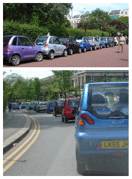
Figure 20.34. Nine out of ten vehicles in London are G-Wizes. (And 95% of statistics are made up.)
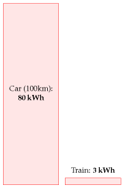
Figure 20.35. 100 km in a single-person car, compared with 100 km on a fully-occupied electric high-speed train.
www.tfl.gov.uk/assets/downloads/corporate/TfL-environment-report2007.pdf,
www.tfl.gov.uk/assets/downloads/corporate/London-TravelReport-2007-final.pdf,
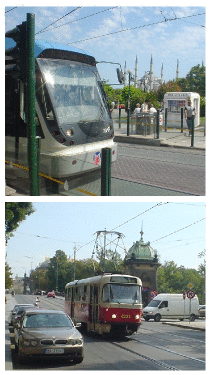
Figure 20.36. Trams work nicely in Istanbul and Prague too.
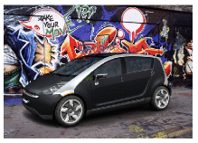
Figure 20.37. Th!nk Ox. Photo from www.think.no.
Th!nk Electric cars from Norway. The five-door Th!nk Ox has a range of 200km. Its batteries weigh 350 kg, and the car weighs 1500 kg in total. Its energy consumption is approximately 20 kWh per 100 km. www.think.no
Electric Smart Car “The electric version is powered by a 40 bhp motor, can go up to 70 miles, and has a top speed of 70 mph. Recharging is done through a standard electrical power point and costs about £1.20, producing the equivalent of 60 g/km of carbon dioxide emissions at the power station. [cf. the equivalent petrol-powered Smart: 116 g/km.] A full recharge takes about eight hours, but the battery can be topped up from 80%-drained to 80%-charged in about three-and-a-half hours.” [www.whatcar.com/newsarticle.aspx?NA=226488]
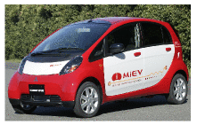
Figure 20.38. The i MiEV from Mitsubishi Motors Corporation. It has a 47 kW motor, weighs 1080 kg, and has a top speed of 130 km/h.
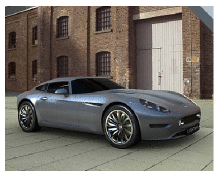
Figure 20.39. Lightning: 11 kWh per 100 km. Photo from www.lightningcarcompany.co.uk.
Figure 20.40. The Aptera. 6 kWh per 100 km. Photo from www.aptera.com.
Figure 20.41. The Loremo. 6 kWh per 100 km. Photo from evolution.loremo.com.
Berlingo Electrique 500E, an urban delivery van (figure 20.20), has 27 nicad batteries and a 28 kW motor. It can transport a payload of 500 kg. Top speed: 100 km/h; range: 100 km. 25 kWh per 100 km.(Estimate kindly supplied by a Berlingo owner.) [4wm2w4]
i MiEV This electric car is projected to have a range of 160 km with a 16 kWh battery pack. That’s 10 kWh per 100 km – better than the G-Wiz – and whereas it’s hard to fit two adult Europeans in a G-Wiz, the Mitsubishi prototype has four doors and four full-size seats (figure 20.38). [658ode]
EV1 The two-seater General Motors EV1 had a range of 120 to 240 km per charge, with nickel-metal hydride batteries holding 26.4 kWh. That’s an energy consumption of between 11 and 22 kWh per 100 km.
Lightning (figure 20.39) – has four 120 kW brushless motors, one on each wheel, regenerative braking, and fast-charging Nanosafe lithium titanate batteries. A capacity of 36 kWh gives a range of 200 miles (320 km). That’s 11 kWh per 100 km. www.lightningcarcompany.co.uk
Aptera This fantastic slippery fish is a two-seater vehicle, said to have an energy cost of 6 kWh per 100 km. It has a drag coefficient of 0.11 (figure 20.40). Electric and hybrid models are being developed. www.aptera.com
Loremo Like the Aptera, the Loremo (figure 20.41) has a small frontal area and small drag coefficient (0.2) and it’s going to be available in both fossil-fuel and electric versions. It has two adult seats and two rear-facing kiddie seats. The Loremo EV will have lithium ion batteries and is predicted to have an energy cost of 6 kWh per 100 km, a top speed of 170 km/h, and a range of 153 km. It weighs 600 kg. evolution.loremo.com
eBox The eBox has a lithium-ion battery with a capacity of 35 kWh and a weight of 280 kg; and a range of 140–180 miles. Its motor has a peak power of 120 kW and can produce a sustained power of 50 kW. Energy consumption: 12 kWh per 100 km.
Ze-0 A five-seat, five-door car. Maximum speed: 50mph. Range: 50 miles. Weight, including batteries: 1350 kg. Lead acid batteries with capacity of 18 kWh. Motor: 15 kW. 22.4 kWh per 100 km.
e500 An Italian Fiat-like car, with two doors and 4 seats. Maximum speed: 60 mph. Range in city driving: 75 miles. Battery: lithium-ion polymer.
MyCar The MyCar is an Italian-designed two-seater. Maximum speed: 40 mph. Maximum range: 60 miles. Lead-acid battery.
Mega City A two-seater car with a maximum continuous power of 4 kW and maximum speed of 40 mph: 11.5 kWh per 100 km. Weight unladen (including batteries) – 725 kg. The lead batteries have a capacity of 10 kWh.
Xebra Is claimed to have a 40 km range from a 4.75 kWh charge. 12 kWh per 100 km. Maximum speed 65 km/h. Lead-acid batteries.
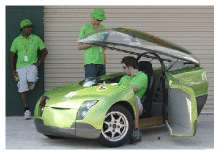
Figure 20.42. The TREV. 6 kWh per 100 km. Photo from www.unisa.edu.au.
(Figure omitted from this edition: third-party rights.)
Figure 20.43. Toyota RAV4 EV. Photo by Kenneth Adelman.
TREV The Two-Seater Renewable Energy Vehicle (TREV) is a prototype developed by the University of South Australia (figure 20.42). This three-wheeler has a range of 150 km, a top speed of 120 km/h, a mass of 300 kg, and lithium-ion polymer batteries weighing 45 kg. During a real 3000 km trip, the energy consumption was 6.2 kWh per 100 km. w3.unisa.edu.au/solarcar/trev/
Venturi Fetish Has a 28 kWh battery, weighing 248 kg. The car weighs 1000 kg. Range 160–250 km. That’s 11–17 kWh per 100 km. www.venturifetish.fr/fetish.html
Toyota RAV4 EV This vehicle – an all-electric mini-SUV – was sold by Toyota between 1997 and 2003 (figure 20.43). The RAV4 EV has 24 12-volt 95 Ah NiMH batteries capable of storing 27.4 kWh of energy; and a range of 130 to 190 km. So that’s an energy consumption of 14–21 kWh per 100 km. The RAV4 EV was popular with Jersey Police force.
Phoenix SUT – a five-seat “sport utility truck” made in California – has a range of “up to 130 miles” from a 35 kWh lithium-ion battery pack. (That’s 17 kWh per 100 km.) The batteries can be recharged from a special outlet in 10 minutes. www.gizmag.com/go/7446/
Modec delivery vehicle Modec carries two tons a distance of 100 miles. Kerb weight 3000 kg. www.modec.co.uk
Smith Ampere Smaller delivery van, 24 kWh lithium ion batteries. Range “over 100 miles.” www.smithelectricvehicles.com
Electric minibus From www.smithelectricvehicles.com: 40 kWh lithium ion battery pack. 90 kW motor with regenerative brakes. Range “up to 100 miles.” 15 seats. Vehicle kerb weight 3026 kg. Payload 1224 kg. That’s a vehicle-performance of at best 25 kWh per 100 km. If the vehicle is fully occupied, it could deliver transportation at an impressive cost of 2 kWh per 100 p-km.
Electric coach The Thunder Sky bus has a range of 180 miles and a recharge time of three hours. www.thunder-sky.com
Figure 20.44. Vectrix: 2.75 kWh per 100 km. Photo from www.vectrix.com.
Electric scooters The Vectrix is a substantial scooter (figure 20.44). Its battery (nickel metal hydride) has a capacity of 3.7 kWh. It can be driven for up to 68 miles at 25 miles/h (40 km/h), on a two-hour charge from a standard electrical socket. That’s 110 km for 3 kWh, or 2.75 kWh per 100 km. It has a maximum speed of 62 mph (100 km/h). It weighs 210 kg and has a peak power of 20 kW. www.vectrix.com The “Oxygen Cargo” is a smaller scooter. It weighs 121 kg, has a 38 mile range, and takes 2–3 hours to charge. Peak power: 3.5 kW; maximum speed 28 mph. It has two lithium-ion batteries and regenerative brakes. The range can be extended by adding extra batteries, which store about 1.2 kWh and weigh 15 kg each. Energy consumption: 4 kWh per 100 km.
Hydrogen and fuel cells are not the way to go. The decision by the Bush administration and the State of California to follow the hydrogen highway is the single worst decision of the past few years.
James Woolsey, Chairman of the Advisory Board of the US Clean Fuels Foundation, 27th November 2007.
In September 2008, The Economist wrote “Almost nobody disputes that … eventually most cars will be powered by batteries alone.” On the other hand, to hear more from advocates of hydrogen-based transport, see the Rocky Mountain Institute’s pages about the “HyperCar” www.rmi.org/hypercar/.
The Hydrogen 7 and its hydrogen-fuel-cell cousins are, in many ways, simply flashy distractions.
David Talbot, MIT Technology Review www.technologyreview.com/Energy/18301/
Honda’s fuel-cell car, the FCX Clarity, weighs 1625 kg, stores 4.1 kg of hydrogen at a pressure of 345 bar, and is said to have a range of 280 miles, consuming 57 miles of road per kg of hydrogen (91 km per kg) in a standard mix of driving conditions [czjjo], [5a3ryx]. Using the cost for creating hydrogen mentioned above, assuming natural gas is used as the main energy source, this car has a transport cost of 69 kWh per 100 km.
Honda might be able to kid journalists into thinking that hydrogen cars are “zero emission” but unfortunately they can’t fool the climate.
Merrick Godhaven
The 8-carriage stopping train from Cambridge to London (figure 20.4) weighs 275 tonnes, and can carry 584 passengers seated. Its maximum speed is 100mph (161 km/h), and the power output is 1.5 MW. If all the seats are occupied, this train at top speed consumes at most 1.6 kWh per 100 passenger-km.↩︎
A widely quoted statistic says “Only 1% of fuel energy in a car goes into moving the driver.” In fact the percentage in this myth varies in size as it commutes around the urban community. Some people say “5% of the energy goes into moving the driver.” Others say “A mere three tenths of 1 percent of fuel energy goes into moving the driver.” [4qgg8q] My take, by the way, is that none of these statistics is correct or helpful.↩︎
The bicycle’s performance is about the same as the eco-car’s. Cycling on a single-person bike costs about 1.6 kWh per 100 km, assuming a speed of 20 km/h. For details and references, see Chapter A.↩︎
London Underground. A Victoria-line train consists of four 30.5-ton and four 20.5-ton cars (the former carrying the motors). Laden, an average train weighs 228 tons. The maximum speed is 45 mile/h. The average speed is 31 mph. A train with most seats occupied carries about 350 passengers; crush-loaded, the train takes about 620. The energy consumption at peak times is about 4.4 kWh per 100 passenger-km (Catling, 1966).↩︎
High-speed train. A diesel-powered intercity 125 train (on the right in figure 20.5) weighs 410 tons. When travelling at 125mph, the power delivered “at the rail” is 2.6 MW. The number of passengers in a full train is about 500. The average fuel consumption is about 0.84 litres of diesel per 100 seat-km [5o5x5m], which is a transport cost of about 9 kWh per 100 seat-km. The Class 91 electric train (on the left in figure 20.5) travels at 140 mph (225 km/h) and uses 4.5 MW. According to Roger Kemp, this train’s average energy consumption is 3 kWh per 100 seat-km [5o5x5m]. The government document [5fbeg9] says that east-coast mainline and west-coast mainline trains both consume about 15 kWh per km (whole train). The number of seats in each train is 526 or 470 respectively. So that’s 2.9–3.2 kWh per 100 seat-km.↩︎
the total energy cost of all London’s underground trains, was 15 kWh per 100 p-km. … The energy cost of all London buses was 32 kWh per 100 pkm. Source: [679rpc]. Source for train speeds and bus speeds: Ridley and Catling (1982).↩︎
Croydon Tramlink.↩︎
… provision of excellent cycle facilities … The UK street design guide [www.manualforstreets.org.uk] encourages designing streets to make 20 miles per hour the natural speed. See also Franklin (2007).↩︎
A fair and simple method for handling congestion-charging. I learnt a brilliant way to automate congestion-charging from Stephen Salter. A simple daily congestion charge, as levied in London, sends only a crude signal to drivers; once a car-owner has decided to pay the day’s charge and drive into a congestion zone, he has no incentive to drive little in the zone. Nor is he rewarded with any rebate if he carefully chooses routes in the zone that are not congested. Instead of having a centralized authority that decides in advance when and where the congestion-charge zones are, with expensive and intrusive monitoring and recording of vehicle movements into and within all those zones, Salter has a simpler, decentralized, anonymous method of charging drivers for driving in heavy, slow traffic, wherever and whenever it actually exists. The system would operate nationwide. Here’s how it works. We want a device that answers the question “how congested is the traffic I am driving in?” A good measure of congestion is “how many other active vehicles are close to mine?” In fast-moving traffic, the spacing between vehicles is larger than slow-moving traffic. Traffic that’s trundling in tedious queues is the most densely packed. The number of nearby vehicles that are active can be sensed anonymously by fitting in every vehicle a radio transmitter/receiver (like a very cheap mobile phone) that transmits little radio-bleeps at a steady rate whenever the engine is running, and that counts the number of bleeps it hears from other vehicles. The congestion charge would be proportional to the number of bleeps received; this charge could be paid at refuelling stations whenever the vehicle is refuelled. The radio transmitter/receiver would replace the current UK road tax disc.↩︎
hydraulics and flywheels salvage at least 70% of the braking energy. Compressed air is used for regenerative braking in trucks; eaton.com say “hydraulic launch assist” captures 70% of the kinetic energy. [5cp27j] The flywheel system of flybridsystems.com also captures 70% of the kinetic energy. www.flybridsystems.com/F1System.html Electric regenerative braking salvages 50%. Source: E4tech (2007).↩︎
Electric batteries capable of delivering 60 kW would weigh about 200 kg. Good lithium-ion batteries have a specific power of 300 W/kg (Horie et al., 1997; Mindl, 2003).↩︎
the average new car in the UK emits 168 g CO2 per km. This is the figure for the year 2006 (King, 2008). The average emissions of a new passenger vehicle in the USA were 255 g per km (King, 2008).↩︎
The Toyota Prius has a more-efficient engine. The Prius’s petrol engine uses the Atkinson cycle, in contrast to the conventional Otto cycle. By cunningly mixing electric power and petrol power as the driver’s demands change, the Prius gets by with a smaller engine than is normal in a car of its weight, and converts petrol to work more efficiently than a conventional petrol engine.↩︎
Hybrid technologies give fuel savings of 20% or 30%. For example, from Hitachi’s research report describing hybrid trains (Kaneko et al., 2004): highefficiency power generation and regenerative braking are “expected to give fuel savings of approximately 20% compared with conventional diesel-powered trains.”↩︎
Only 8.3% of commuters travel over 30 km to their workplace. Source: Eddington (2006). The dependence of the range of an electric car on the size of its battery is discussed in Chapter A.↩︎
Lots of electric vehicles. A note added in the 2026 revision: the catalogue that follows is a historical document. Of the eighteen or so vehicles named in it, essentially one manufacturer survived and prospered — Tesla, whose 2008 Roadster MacKay treats as an exotic prototype. Think Global, which made the Th!nk Ox, went bankrupt in 2011. The Loremo was never produced and its company failed in 2010. Aptera went bankrupt in 2011, was revived in 2019, and has still not delivered a production vehicle. Vectrix, which made the scooter, went bankrupt in 2009. Smith Electric Vehicles, which made the minibus, stopped trading. ZAP, which made the Xebra, folded. The G-Wiz was discontinued. The i MiEV, the most conventional car on the list, was built until 2021 and then dropped.
The vehicles were nearly all wrong and the number was very nearly right, which is the useful lesson. MacKay’s summary — that electric vehicles deliver transport at roughly 15 kWh per 100 km — describes today’s efficient models well: a Tesla Model 3 is rated at about 14.7 and a Hyundai Kona Electric at 13.4 on the European test cycle. What he could not anticipate is that the fleet would not sit at the efficient end. A study of 342 electric cars sold in Europe found a real-world average of 21 ± 4 kWh per 100 km, against a certified average of 19, and the largest electric pickups and sport-utility vehicles are near 30. Chapter A explains the gap in one line: the model has frontal area and mass in it, and both went up.
There is a coincidence in that worth pausing on. MacKay measured a real G-Wiz in London over nineteen recharges and got 21 kWh per 100 km. The real-world European fleet average today is 21 kWh per 100 km. The energy per kilometre has not improved at all in eighteen years — what improved is everything else. Today’s 21 buys a car that is four times faster, several times safer, carries a family, and goes 400 km rather than 60. The efficiency gain was taken as capability, not as energy, which is the same trade chapter 9 finds in lighting and chapter 22 finds in gadgets, and it is the normal way efficiency is spent.
The original list follows unchanged, because it is a good record of what a serious observer could see in 2008, and because the reader who wants to know how hard it is to pick winners should see how many there were.
They are all listed below, in no particular order. Performance figures are mainly from the manufacturers. As we saw above, real-life performance doesn’t always match manufacturers’ claims.↩︎
the energy-density of compressed-air energy-stores is only about 11–28Wh per kg. The theoretical limit, assuming perfect isothermal compression: if 1 m3 of ambient air is slowly compressed into a 5-litre container at 200 bar, the potential energy stored is 0.16 kWh in 1.2 kg of air. In practice, a 5-litre container appropriate for this sort of pressure weighs about 7.5 kg if made from steel or 2 kg using kevlar or carbon fibre, and the overall energy density achieved would be about 11–28 Wh per kg. The theoretical energy density is the same, whatever the volume of the container.↩︎
Arnold Schwarzenegger … filling up a hydrogen-powered Hummer. Nature 438, 24 November 2005. I’m not saying that hydrogen will never be useful for transportation; but I would hope that such a distinguished journal as Nature would address the hydrogen bandwagon with some critical thought, not only euphoria.↩︎
In the Clean Urban Transport for Europe project the overall energy required to power the hydrogen buses was between 80% and 200% greater than that of the baseline diesel bus. Source: CUTE (2006); Binder et al. (2006).↩︎
Fuelling the hydrogen-powered car made by BMW requires three times more energy than an average car. Half of the boot of the BMW “Hydrogen 7” car is taken up by its 170-litre hydrogen tank, which holds 8 kg of hydrogen, giving a range of 200 km on hydrogen [news.bbc.co.uk/1/hi/business/6154212.stm]. The calorific value of hydrogen is 39 kWh per kg, and the best-practice energy cost of making hydrogen is 63 kWh per kg (made up of 52 kWh of natural gas and 11 kWh of electricity) (CUTE, 2006). So filling up the 8 kg tank has an energy cost of at least 508 kWh; and if that tank indeed delivers 200 km, then the energy cost is 254 kWh per 100 km.↩︎
Sales figures are for 2025 unless stated, from the trade compilations of national registration data; European figures cover the EU, UK and EFTA, and the Chinese figures given are first-half. Rankings from different compilers differ at the margins because of how model variants are grouped — the Volkswagen ID.3 and ID.4 are sometimes counted together and sometimes separately, which moves Volkswagen’s position — so these should be read as the shape of each market rather than as a definitive order. The 20% European market share is for battery-electric cars only, excluding plug-in hybrids. Korean domestic sales are small relative to Korean production, which is why that entry is given by manufacturer rather than by market. Test cycles: WLTP in Europe, EPA in the United States, CLTC in China; published comparisons put CLTC range figures roughly 15–30% above WLTP for the same vehicle, and EPA below WLTP, so consumption figures are not comparable across the three without conversion.↩︎
A lithium-ion battery is 3% lithium. Source: Fisher et al. (2006).↩︎
Lithium specialist R. Keith Evans says “concerns regarding lithium availability … are unfounded.” – Evans (2008).↩︎
Honda ended Clarity Fuel Cell production in 2021 citing low demand; Shell withdrew from American hydrogen retail in 2024; roughly 56 consumer hydrogen filling stations remain in North America, concentrated on the Californian coast with a few in British Columbia, Hawaii and eastern Canada; Toyota sold 147 Mirais in the United States through the third quarter of 2025, a fall of 54%. Three fuel-cell passenger cars remain on sale in the United States — Toyota Mirai, Hyundai Nexo and Honda CR-V e:FCEV — all only in California. Note that this is a statement about passenger cars in developed markets, not about hydrogen generally: fuel-cell buses and trucks continue in service, China and South Korea maintain much larger fuel-cell vehicle programmes than Europe or the United States, and the picture there is different.↩︎
Michael Liebreich, “Clean Hydrogen Ladder Version 5.0”, 2023: https://liebreich.com/hydrogen-ladder-version-5-0/. The ladder ranks candidate uses from A, where hydrogen is unavoidable, to G, where it is uncompetitive; fertilizer, hydrogenation, methanol and steel sit near the top, passenger cars and domestic heating at the bottom. It is one analyst’s framework rather than a consensus document, and its rankings are contested at the margins — particularly for shipping, aviation and long-haul trucking, which sit in the disputed middle. Chapter 28a cites the same source from the electricity side.↩︎
“Järnväg kan aldrig mer fungera i glesbebodda Sverige”, Cornucopia?, July 2024: https://cornucopia.se/2024/07/jarnvag-kan-aldrig-mer-fungera-i-glesbebodda-sverige/. As with the other citations to this blog in chapters L, N and here, it is an essay arguing a position rather than a study, and its conclusion — that long-distance passenger rail outside Sweden’s three largest metropolitan areas should be abandoned — goes well beyond what this section takes from it. What is used here is the geographic and cost reasoning, which is sound and quantitative, and the observation about station access. The occupancy table is computed from MacKay’s own figure of 3 kWh per 100 seat-km for a full electric high-speed train and his statement that this is 27 times better than the car, implying about 81 kWh per 100 passenger-km for single-occupancy driving.↩︎
The air-cargo share — under 1% of world trade by volume and over 35% by value, on more than 52 million tonnes a year — is the International Air Transport Association’s, and is the figure the industry itself uses to make this argument. The value of freight travel-time savings is a standard input to transport appraisal; see Gerard de Jong, “Value of freight travel-time savings”, which sets out how it varies by commodity, firm and country. The Eurasian rail comparison — roughly 80% cheaper than air at about half the transit time of sea — is from the modal-shift literature on high-value low-density cargo, which finds the mode share turning on the cargo’s value of time rather than on freight rates alone.↩︎
Greenpeace’s 2025 European price survey covered 142 routes in 31 countries, 109 cross-border and 33 domestic, comparing fares on nine travel dates. Flights were cheaper than trains on 54% of cross-border routes and trains cheaper on 39%; domestically trains were cheaper on 70%. The country figures — France 95%, Spain 92%, the UK 90%, Italy 88% of cross-border routes more expensive by rail — and the Barcelona–London extreme of €14.99 against up to €389 are from the same survey. It is campaigning research with an explicit policy objective, and its method rewards the low-cost carriers’ cheapest advance fares; it is cited here for the direction and rough magnitude, both of which are corroborated by independent coverage, rather than for the precise percentages. The structural explanation it offers — that kerosene for international aviation is untaxed and exempt from VAT while rail pays track access charges, energy taxes and VAT — is not seriously disputed.↩︎
Two Dutch-built liners known as “The Economy Twins.” www.ssmaritime.com/rijndam-maasdam.htm. QE2: www.qe2.org.uk.↩︎
Figure 20.23b is generated by the
transportEnergystep of this edition’s data-refresh script and thefigures/transport_energy.pyplotting script, from a table assembled by hand rather than from a dataset — there is no single source that publishes energy per passenger-kilometre across these modes. Every 2008 point is a figure MacKay states in the text of chapter 5 or chapter 20: bicycle 1.6, full 8-car train 1.6 at 161 km/h, full diesel coach 6.0 at 105 km/h, Croydon Tramlink 9.0 at 25 km/h, London Underground system 15 and London buses 32 in 2006–7, the Tesla Roadster at 15, the G-Wiz’s measured 21 in real London use, the average UK car at 80, the Honda FCX Clarity at 69, the BMW Hydrogen 7 at 254, a full 747 at 42, and the Rijndam at 121 at 85% occupancy. Speeds for the road vehicles are not stated by MacKay and are placed at a common 50 km/h so that they are comparable with each other; only their vertical positions carry information. The horizontal axis mixes conventions and the reader should know which is which. Only MacKay’s three whole-system figures are average speeds — the Underground at 33 km/h, London buses at 18 and the Croydon tram at 25, all from his own text. His train is at its maximum speed of 161 km/h, his coach at an assumed 65 mph cruise, and the vessels at cruise too, 25 knots for the P-12 and 22 for the C-8. An average speed includes stops and a cruise speed does not, so everything plotted at a cruise speed sits further right than a like-for-like comparison would put it. The diesel ferry’s speed is not published anywhere and is derived from journey times on the same route, 55 minutes against the P-12’s 30, giving 46.3 × 30/55 = 25 km/h; that derivation assumes the P-12 holds cruise speed for the whole crossing, which it cannot, so 25 km/h is an upper bound on the diesel vessels’ speed rather than an estimate of it. The 2026 land points are a real-world European fleet average of 21 kWh per 100 km across 342 electric cars and a WLTP figure of 14.7 for a Tesla Model 3, an e-bike computed at about 0.6 kWh per 100 km from a typical 500 Wh battery and 80 km range, and the modern long-haul figure of 32 from chapter 5’s revision. The water points are computed in the note below. Both axes are logarithmic, which MacKay’s original was not, because six of the modes now fall within a factor of two of each other and a linear axis makes them illegible.↩︎Computed from Candela’s own published specifications. P-12 Shuttle: 378 kWh nominal and 336 kWh usable battery, 30 seated passengers plus one crew, “up to 40 nautical miles at 25 knots service speed”, giving 336 ÷ (40 × 1.852) = 4.54 kWh per kilometre and 15.1 kWh per 100 passenger-km at full seating. C-8: 69 kWh, “57 nautical miles at 22 knots”, five passengers plus a driver, giving 0.654 kWh per kilometre, 10.9 kWh per 100 passenger-km with six aboard and 32.7 with two. Because a quoted range is a maximum, dividing the battery by it gives a lower bound on consumption; the true figures will be somewhat higher, so these points sit slightly further left on the diagram than reality. Candela separately advertises 0.1 kWh per passenger-kilometre for the P-12, which is 10 rather than 15 per 100; this edition uses the figure it can derive rather than the one quoted.↩︎
The P-12 Nova has operated route 89 between Ekerö and central Stockholm since 2024. The energy saving per passenger-kilometre against the diesel vessels Lux and Sunnan is quoted as 66% in Candela’s own trial report, and as 80% and 84% in press coverage and in the manufacturer’s marketing material; the CO2 reduction is given as 94% or 95%, the difference from the energy figure reflecting that Swedish electricity is nearly carbon-free. The 44–94 kWh per 100 passenger-km band for the diesel vessels is this edition’s arithmetic, obtained by dividing the derived P-12 figure of 15.1 by (1 − 0.66) and (1 − 0.84); it is an inference from a contested claim and not a measurement of those vessels. Journey time falling from 55 to about 30 minutes and a 22.5% rise in passenger numbers during the trial are from the same trial report.↩︎
Over forty P-12s on order, and the Lake Tahoe deployment replacing part of about 20 000 daily vehicle trips around the lake, are from Candela and from trade reporting in 2026; order books are not audited and should be read as reservations. The Arc Sport is a 23-foot electric wake boat from Arc Boat Company of Los Angeles with a 226 kWh pack and roughly 570 hp, priced from $258 000, with deliveries from 2026. The two Maid of the Mist vessels at Niagara Falls, James V. Glynn and Nikola Tesla, entered service in October 2020 as the first all-electric passenger vessels in the United States, with 316 kWh of battery split between two catamaran hulls, about 38 kWh consumed per trip, and a seven-minute recharge at the dock on local hydroelectricity. No energy-per-passenger-kilometre figure is computed for these three because the trip distances are not published in a form that would support one.↩︎
Hybrid Air Vehicles quotes 9 g of CO2 per passenger-kilometre for the planned hybrid-electric Airlander 10, in a 90-seat regional configuration, against “over 50 kg per traveller” for a jet on a comparable trip, and a 90% emissions reduction. The conversion to about 3.4 kWh per 100 passenger-km assumes jet fuel at 3.16 kg of CO2 per kg burned and 12 kWh per kg, giving 2.85 g of fuel and 0.034 kWh per passenger-kilometre. Two warnings. This is a manufacturer’s figure for an aircraft that has not flown in this configuration — the hybrid-electric variant is planned for around 2030 — so it is a design target, not a measurement. And 9 g/p-km is a carbon figure, not an energy one; converting it as done here assumes the hybrid burns kerosene for the fraction of the energy that is not electric, which is the assumption most favourable to the claim.↩︎
The Airlander 10 airframe first flew in August 2012 as the US Army’s Long Endurance Multi-Intelligence Vehicle; the programme was cancelled in 2013. Hybrid Air Vehicles reacquired it, flew it in the UK in August 2016, sustained damage to the cockpit on landing during its second flight later that month, and lost the aircraft in November 2017 when it broke free of its mooring mast and deflated. The prototype was retired in 2019. CargoLifter AG filed for insolvency in 2002; its hangar at Brand, near Berlin, is now a tropical water park. The production Airlander 10 is in a type-certification programme with the UK Civil Aviation Authority, with FAA and EASA validation sought, around £1 billion of reserved orders including twenty aircraft for Air Nostrum Group and three for military use, a planned production line in South Yorkshire at up to 24 aircraft a year, first flight planned for 2026 and entry into service for 2028. Those last figures are the company’s own plan; every previous airship programme cited here also had a plan.↩︎
The seawater-to-fuel process and its economics are set out in Heather D. Willauer, Dennis R. Hardy, Seth A. Moyer, Felice DiMascio, Frederick W. Williams and David M. Drab, “An economic basis for littoral land-based production of low carbon fuel from nuclear electricity and seawater for naval or commercial use”, Energy Policy, 2015, https://doi.org/10.1016/j.enpol.2015.02.006, which is the source of the 0.60 kWh-of-fuel-per-kWh-of-electricity figure and of a cost range of $1.48–8.67 per gallon for 82 000 gallons a day, against a fully burdened delivered-at-sea price then estimated at $6–7 per gallon. The underlying chemistry is covered by a series of US Navy patents naming Willauer and colleagues, including electrochemical acidification of seawater to recover carbon dioxide with simultaneous hydrogen production (US 9,719,178; US 11,421,331) and alkali-doped molybdenum carbide catalysts for the reverse water-gas shift (US 11,266,980; US 11,890,598). Commercialisation figures — Sea Dragon Energy Inc., about $19.2 million in 2024 for a pilot unit and $9.5 million in August 2025 for a phase-two demonstration, with a deployable demonstration targeted for 2027, and partners at the universities of Rochester and Pittsburgh and Emerging Fuels Technology — are from trade reporting. Two cautions. The 60% figure is the thermodynamic conversion claimed for the process and does not include the energy of building the plant, the reactor or the seawater handling; a full-system figure would be lower. And the cost range spans nearly a factor of six because it depends almost entirely on the assumed capital cost of nuclear electricity, which chapter 24 shows is the least settled number in the subject.↩︎
The ECLIF3 campaign (Airbus, Rolls-Royce, the German Aerospace Center DLR and Neste) flew an Airbus A350-941 with both Trent XWB engines on 100% HEFA sustainable aviation fuel, chased by DLR’s instrumented Falcon; it found the number of contrail ice crystals per mass of fuel burned reduced by 56% against a reference Jet A-1. See Märkl et al., “Powering aircraft with 100% sustainable aviation fuel reduces ice crystals in contrails”, Atmospheric Chemistry and Physics 24, 3813–3837 (2024). The earlier DLR–NASA campaigns on an A320 burning low-aromatic blends found 50–70% reductions in soot and ice-crystal number: Voigt et al., “Cleaner burning aviation fuels can reduce contrail cloudiness”, Communications Earth & Environment 2, 114 (2021). Fuel sulphur content has since been shown to modulate ice-crystal number independently of aromatics. Two qualifications belong with these numbers. Fewer, larger ice crystals is not automatically less warming in every atmospheric condition, though it is in most; and these are per-mass-of-fuel measurements from a small number of flights, not a fleet-wide climate accounting. The energy-density point is that paraffinic kerosene runs roughly 43.5–44 MJ/kg against about 43.0 for Jet A-1, with lower density, so the gain appears on weight-limited sectors and not on volume-limited ones.↩︎
The four nuclear merchant ships are NS Savannah (United States, 1962, laid up 1972), NS Otto Hahn (West Germany, commissioned 11 October 1968, reactor deactivated and replaced by a diesel plant in 1979 after eleven years and some 650 000 nautical miles under nuclear power; she then traded as a conventional container ship under several names until being scrapped in Bangladesh in 2009), NS Mutsu (Japan, radiation leak through a defective reactor shield on first criticality in August 1974, refused entry at Ōminato, never entered commercial service) and Sevmorput (Soviet Union, 1988, in service 1988–2007 and again 2016–2023, laid up since and not formally decommissioned; status checked August 2026). Icebreakers are excluded because they are state vessels operating in state waters and never face the port-call problem that defeats the merchant ships. The Savannah’s 0.14 kWh per ton-km is MacKay’s own figure in this chapter; the Ever Uberty’s 0.015 is his in chapter 15’s notes. The comparison should be read as a caution against assuming nuclear propulsion is efficient, not as a measurement of what a purpose-built modern nuclear cargo ship would achieve: the Savannah devoted a large fraction of her displacement to shielding and to passenger accommodation, ran at 21 knots, and carried 14 000 t against the Ever Uberty’s 63 000 t deadweight.↩︎
The regulatory study by Maersk, Lloyd’s Register and Core Power was announced in August 2024 and ran for twelve months from September 2024, covering a feeder containership operating from a European port with a fourth-generation reactor. Enabling Nuclear-Powered Feeder Ships — A Joint Development Project on Port Call Feasibility and Regulatory Pathways was published on 12 June 2026 by Core Power, Maersk, Lloyd’s Register and the Port of Rotterdam; the quoted finding about barriers being regulatory rather than technical is from that report, and it should be read with the awareness that every party to it has a commercial interest in the conclusion that the engineering is ready. The IMO is revising the Code of Safety for Nuclear Merchant Ships, originally adopted in 1981 and never applied to a ship built since. The Chinese design is CSSC Jiangnan Shipbuilding’s KUN-24AP, a 24 000-TEU containership with a thorium molten-salt reactor, presented at Marintec China in December 2023 and holding an approval in principle from DNV. Approval in principle is a statement that a concept has no obvious showstopper, not a class certificate; no keel has been laid, and the South China Morning Post reported in December 2025 a stated intention to build by 2035.↩︎
Edward Barlow and Daniel Skeffington, Powering the Future: Leveraging the UK’s Nuclear and Maritime Heritage, Policy Exchange, 2026, with a foreword by Professor Dame Fiona Murray: https://policyexchange.org.uk/publication/powering-the-future/. Policy Exchange is a British think tank and this is an advocacy document, not a neutral assessment; its case is explicitly that Britain should position itself as the rule-setting and insurance centre for allied civil maritime nuclear, and its recommendations are chosen to that end. What is taken from it here is the diagnosis rather than the prescription. The 1962 Brussels Convention on the Liability of Operators of Nuclear Ships was adopted on 25 May 1962 and never entered into force; the Paris Convention’s exclusive liability regime is constructed around nuclear installations and around material in transport, and does not fit a mobile reactor that is itself the vessel. The IMO timetable is from the Sub-Committee on Ship Design and Construction’s 12th session, 19–23 January 2026, with finalisation, approval and adoption targeted for 2030; the Code of Safety for Nuclear Merchant Ships dates from 1981. The London market figure of £104.8 billion of premiums in 2024, of which about £5.8 billion was maritime, is the International Underwriting Association’s; the UK-flagged share — 0.4% of world deadweight tonnage in 2025 for the UK-registered trading fleet, about 4% for the broader fleet including ships beneficially owned, managed or operated from the UK — is from the Department for Transport’s Shipping fleet statistics: 2025. Britain does already have the Merchant Shipping (Nuclear Ships) Regulations 2022 as a domestic framework. The report also notes Jiangnan Shipyard’s stated intention to build a thorium-powered container vessel by 2035, which is the design referred to above and is a stated intention rather than a construction contract.↩︎
The American figures — over 7600 reactor-years with no reactor accident, 33 distinct reactor plant designs, 273 reactor plants operated, 562 reactor cores brought critical, a current fleet of 77 nuclear-powered ships, and roughly 233 million kilometres steamed — are the Naval Nuclear Propulsion Program’s own, reported as of 2025, and are not independently audited. The programme also states that no personnel have exceeded a federal radiation limit. They are a claim about reactor accidents specifically. Note also that the reactor-years are cumulative across the whole programme since 1955 while the ship count is the fleet today; the two must not be multiplied together. The losses of USS Thresher (1963) and USS Scorpion (1968), with all hands, were not reactor accidents, and the same distinction applies to the Russian losses of K-278 Komsomolets (1989) and K-141 Kursk (2000). Soviet accidents cited: K-19’s loss of primary coolant in July 1961; K-11’s two core-loading accidents at Severodvinsk in February 1965; K-27’s core damage in 1968, in which nine crewmen received fatal doses; and the refuelling explosion aboard K-431 at Chazhma Bay near Vladivostok on 10 August 1985, which killed ten. Estimates of about ten Soviet naval reactor accidents in total are from the Bellona Foundation’s survey of the Northern Fleet. Akademik Lomonosov, two KLT-40S reactors on a moored barge, first supplied power to Pevek in Chukotka in December 2019 and entered full commercial operation in May 2020. Ulyanovsk (Project 1143.7), 73 000 t and four reactors, was laid down at the Black Sea Shipyard, Nikolayev, on 25 November 1988 and dismantled on the slipway between February and October 1992 under a decree of the Ukrainian government, at about 40% complete.↩︎
US and UK naval reactors use uranium enriched to approximately 93% U-235; France uses low-enriched fuel, with the Suffren class reported below 6% enrichment, achieved by increasing core volume within the same reactor envelope at the cost of periodic refuelling; China is widely assessed to do the same, but its naval enrichment level is not publicly confirmed and estimates differ. The legal basis for holding unsafeguarded HEU is that the NPT and the associated IAEA comprehensive safeguards agreements provide for nuclear material to be withdrawn from safeguards for non-proscribed military use, of which naval propulsion is the standing example; no state has ever had this arrangement fully verified in practice, and the IAEA has no field access to fuel once it is installed in a submarine. The AUKUS agreement, under which Australia — a non-nuclear-weapon state — would receive HEU-fuelled submarines, has made the arrangement contentious, and the precedent it sets is disputed among safeguards specialists rather than settled. Nothing in this paragraph is a claim that naval HEU has been diverted; the point is only that the verification gap exists and that it is unavailable to commercial operators by design.↩︎
The convoy arithmetic — a 345 MW reactor ship supplying propulsive power to vessels whose main engines are around 80 MW each — is from the trade literature on small-scale marine nuclear and is an illustrative sizing rather than a design; 345/80 is four such ships, and the twenty-feeder figure in the text assumes a feeder’s engine nearer 15 MW, which is typical for the 1000–3000 TEU class. Neither figure allows for transfer or conversion losses. Ulstein’s Thor is a 149-metre replenishment, research and rescue concept with a thorium molten-salt reactor, presented with Sif, a 100-metre battery-electric expedition cruise ship it recharges at sea; Thor’s charging capacity is scaled for four such ships simultaneously. Both are design concepts announced in 2022 and neither has been ordered. Core Power’s Liberty programme, with a feasibility study alongside BWX Technologies on the mPower small modular reactor — an integral light-water pressurised-water reactor whose original programme was shelved in 2014 — proposes shipyard-produced floating nuclear power plants moored at ports or anchored offshore, with an orderbook opening in 2028 and full commercialisation targeted for the middle of the 2030s. Those dates are the company’s. The molten-salt designs assumed by Ulstein’s Thor and by the KUN-24AP have no operating commercial example anywhere; the only sustained operating experience is the Oak Ridge Molten-Salt Reactor Experiment, which ran from 1965 to 1969, and China’s experimental TMSR-LF1, which reached criticality in 2023. Core Power is not committed to molten salt, as the mPower assessment above shows, so “molten salt” should not be read as a claim about every concept in this section.↩︎
This configuration — a military replenishment vessel supplying both electricity and synthesised hydrocarbon to ships in company — is an inference drawn in this edition from three separately documented things: the naval fuel exemption set out in the naval-fuel note, the convoy concepts set out in the convoy note, and the Naval Research Laboratory seawater-to-fuel programme set out in the Sea Dragon note attached to the electrofuels section. It is not, as far as this reviser can establish, a published programme of any navy, and it should be read as an argument about where the constraints point rather than as a report of anything under way. The 1.7 in the text is 1/0.6 rounded — the reciprocal of the 60% conversion efficiency claimed in the Energy Policy paper cited in that note — and applies to fuel energy delivered. Taken unrounded against a 50% engine it gives 1/(0.6 × 0.5) = 3.3 units of reactor electricity per unit of shaft work, which is why multiplying the rounded 1.7 by two lands slightly high at 3.4. Both inherit that paper’s boundary — they exclude the energy of building the plant and the reactor. The direct-electric comparison assumes about 90% for battery round-trip and about 90% for motor, drive and propeller, giving roughly 1.2 kWh of electricity per kWh of shaft work; a ship taking power by cable rather than through a battery does better still. Marine engine efficiency is taken at 50%, which is generous — it is about right for a large slow-speed two-stroke and well above what a gas turbine in a fast vessel achieves, so the 3.3 figure is a floor rather than a central estimate.↩︎
Transrapid magnetic levitation train. www.transrapid.de.↩︎